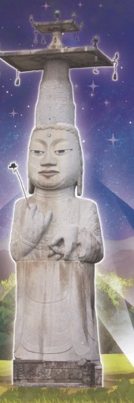
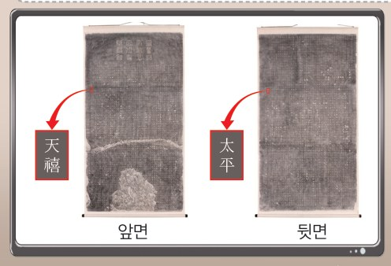
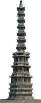
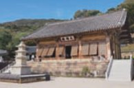
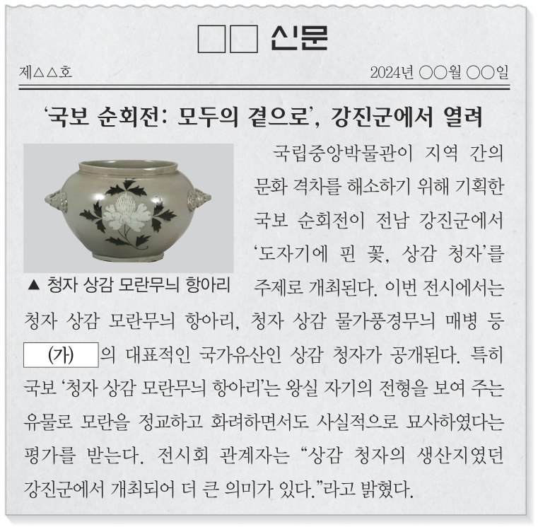
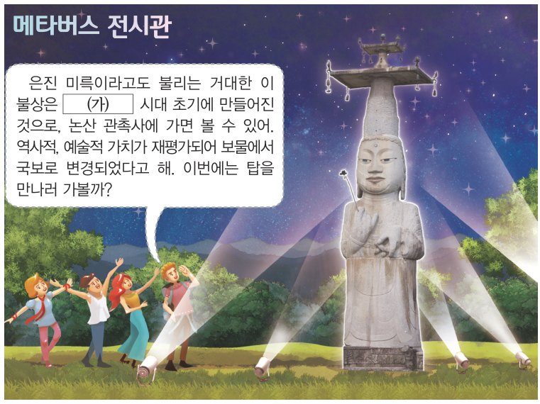
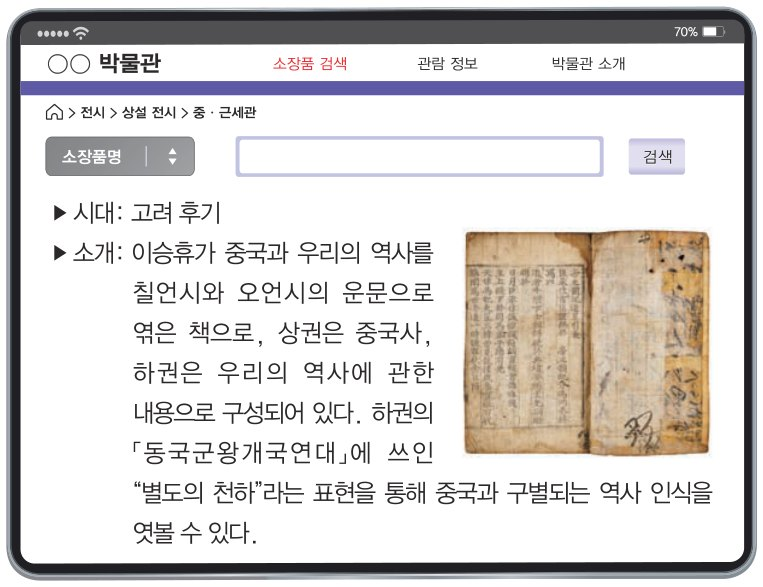
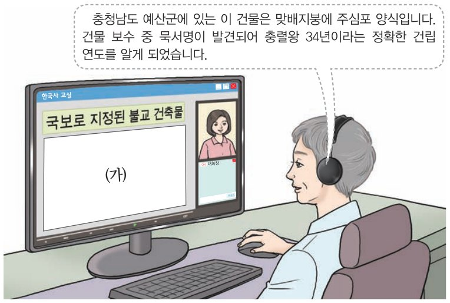
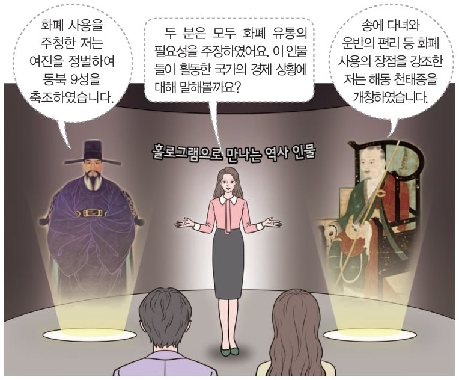
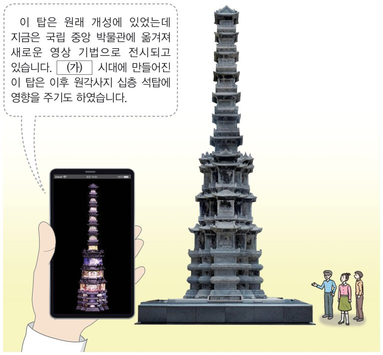

앞 단원에서 살펴본 바와 같이 태조 왕건이 후삼국 통일 직후 호족을 포섭하려 지급한 역분전(940년)은 공로와 주관적 인품에 기댄 임시 조처였기에, 광종의 과거제와 4색 공복 제정으로 관료 체제가 정비되자 개국 공신이 아닌 일반 관료들에게 직무 대가를 공정하게 배분할 새 토지 제도가 절실해졌습니다. 이에 고려 국가는 백성들이 실제로 소유해 매매·상속·임대가 자유로웠던 사유지인 민전(수확량의 10분의 1 수세, 재해 시 촌전·수령·호부·삼사·안찰사 심사를 거쳐 감면)을 바탕으로 관리에게 땅의 소유권이 아니라 농민으로부터 조세를 거둘 권리인 수조권을, 논밭인 전지와 땔감을 얻는 임야인 시지로 묶어 18과로 차등 지급하는 전시과 제도를 세웠습니다(앞 단원 통일신라 신문왕이 노동력 징발이 포함된 녹읍을 폐지하고 수조권만 준 관료전의 원리를 계승함). 먼저 경종 때 시정전시과(976년)에서는 아직 호족 세력이 남아 있던 현실을 감안하여 4색 공복을 바탕으로 관품과 함께 주관적 기준인 '인품'을 병행 적용해 전직·현직 관리에게 토지를 지급하였습니다. 이어 성종이 2성 6부와 12목을 정비한 직후 목종 때 개정전시과(998년)에서는 공신·호족의 주관적 우대를 끊어 내고 객관적 관료 서열을 세우려는 목적 아래 인품 기준을 완전히 배제하고 18과의 '관품'만을 기준으로 전직·현직 관리에게 지급하였습니다. 그러나 문벌귀족 사회가 굳어지고 세습 토지가 늘어나 국가가 나누어 줄 수조지가 바닥을 드러내는 위기가 닥치자, 문종 때 경정전시과(1076년)를 단행하여 퇴직한 전직 관리를 지급 대상에서 제외하고 오직 '현직 관리'에게만 수조권을 지급하도록 축소하였으며, 동시에 소외되던 무관에 대한 대우를 일부 개선하여 체제의 균형을 맞추려 하였습니다(이러한 수조지 부족 대응은 훗날 조선 세조가 현직 관리에게만 수조권을 준 직전법과 똑같은 논리입니다).
전시과 체제에서 일반 관료가 받은 과전은 사망하거나 퇴직하면 국가에 반납하는 것이 원칙이었으나, 앞 단원에서 본 문벌귀족이 세력을 세습할 수 있었던 결정적 경제 기둥인 공음전은 5품 이상 고위 관리에게 지급되어 자손에게 합법적으로 세습되었습니다. 이 밖에도 6품 이하 하급 관리의 자제로서 관직에 오르지 못한 자에게 준 한인전, 군인이나 하급 관리의 유가족 생계를 도운 구분전, 그리고 군역을 세습하는 군인전과 앞 단원에서 배운 지방 향리 직역을 세습하는 외역전은 해당 신분이나 직역을 잇는 조건으로 세습이 허용되었습니다. 한편 국가는 왕실의 경비를 충당하기 위해 내장전을, 중앙과 지방 각 관청의 행정 운영 경비를 충당하기 위해 공해전을 두었으며, 사찰이 보유한 사원전의 경계와 면세 특권을 공적으로 보증하기 위해 상서호부의 공문을 받아 선종 2년인 1085년 양산 통도사 국장생 석표를 세우기도 하였습니다. 그러나 무신정변 이후 무신과 친원파 권문세족이 불법으로 대농장을 겸병하고 대몽 항쟁으로 토지 대장마저 불타 버리면서 전시과 제도는 완전히 붕괴하였습니다. 이에 1270년 개경 환도 직후 원종은 당장 관리들에게 줄 녹봉조차 부족한 재정 파탄을 수습하기 위해 1271년(원종 12년) 경기 8현의 토지를 현직 관리에게 나누어 주는 미봉책인 '녹과전'을 실시하였습니다. 그럼에도 권문세족의 농장 겸병이 멈추지 않고 충목왕의 정치도감(1347년)과 공민왕·신돈의 전민변정도감(1366년)마저 좌절되자, 1388년 위화도 회군으로 실권을 장악한 이성계와 조준·정도전 등 급진파 신진사대부는 권문세족의 경제 기반을 완전히 해체하고 새 국가의 재정과 자신들의 경제 토대를 세우겠다는 목적 아래 1391년(공양왕 3년) '과전법'을 공포하였습니다. 과전법은 권문세족의 불법 농장을 몰수하고 지방 세력의 사적 토지 지배를 막기 위해 원칙적으로 '경기 지방'의 토지에 한하여 전·현직 관리에게 수조권을 지급하였으며(관료 사망 후 과부와 어린 자녀의 생계를 보장하는 수신전·휼양전은 세습 허용), 이로써 다져진 경제력은 이듬해 신진사대부와 이성계가 조선을 건국하는 직접적 물적 토대가 되었습니다.
농업 생산력과 도회지 교역이 커지자 고려 정부는 시장을 통제해 물가를 안정시키고 화폐를 유통해 국가 재정을 확충하는 정책을 전기부터 말기까지 일관되게 추진하였습니다. 수도 개경에는 시전을 설치하고 상행위와 도량형·물가를 감독하는 경시서를 두었으며(신라 경주의 동시전 및 훗날 조선 한양의 평시서와 대비됨), 서적점·약점·다점·주점 같은 관영 상점을 직접 운영하였습니다. 개경과 지방의 상업 거래가 촘촘해지자 개성 상인들은 현금과 외상 거래의 수입·지출을 네 항목으로 빈틈없이 기록하는 독자적 복식부기 회계법인 사개치부법을 발전시켰으며, 수공업 역시 고려 전기에는 관청 수공업과 앞 단원에서 본 특수 행정 구역 '소'(동소·철소·자기소·지소·묵소 등)의 공납 생산이 중심이었다가 무신정변 이후 소 주민의 저항과 해체를 거쳐 고려 후기에는 승려가 직물·양조·제지를 맡은 사원 수공업과 민영 수공업 중심으로 전환되었습니다. 화폐 유통의 변화도 시간순으로 뚜렷한 계보를 이룹니다. 먼저 성종 15년(996년)에는 뒷면에 '동국'을 새겨 고려의 주체성을 드러낸 우리나라 최초의 금속 화폐이자 철전인 건원중보를 발행하였고, 이어 숙종 때에는 송나라의 화폐 경제를 보고 온 승려 의천과 윤관 등의 건의를 받아들여 화폐 유통으로 상업을 장려할 목적으로 주전도감(1097년)을 설치하여 우리나라 지형을 본떠 은 1근으로 만든 고액 은화인 활구(은병, 1101년)와 동전인 삼한통보·해동통보(1102년)·해동중보·동국통보를 주조해 재추와 문무 양반·군인에게 나누어 주었으나 일반 백성 사이에는 여전히 곡식과 삼베가 주로 쓰였습니다. 이후 원 간섭기에 원의 지폐인 보초가 유입되고 은병이 유출되며 거친 삼베(추포)가 난립해 화폐 질서가 극도로 문란해지자, 공민왕 대 이후 소액 화폐와 지폐(저화) 도입 논의가 본격화되었고, 마침내 고려 말 1391년(공양왕 3년)에는 자섬저화고를 두어 닥나무 지폐인 저화(고려통행저화)를 발행하기에 이르렀습니다(비록 곧 폐기되었으나 조선 태종 때 사섬서 설치와 저화 발행의 직접적 선례가 됨).
후삼국 통일 이후 고려 사회가 안정을 되찾자 왕실과 귀족 사이에서 비단·서적·약재 같은 고급 물품의 수요가 크게 늘고, 동시에 국내에서 생산되지 않는 은·모피·유황 등의 전략·생활 물자를 안정적으로 확보해야 할 필요성이 커졌습니다. 이에 고려 국가는 선진 문물을 수용하는 한편 외국 사신과 상인의 출입을 수도의 관문에서 직접 통제·관리해 공·사 무역의 이익을 극대화하겠다는 목적 아래, 개경에서 가까운 예성강 어귀의 국제 무역항 벽란도를 국가적 교역 거점으로 삼아 고려 전기부터 후기까지 대외 교역을 크게 번영시켰습니다. 고려는 송나라로부터 비단·서적·자기·약재·악기를 수입하고 인삼·모시·종이·먹·나전칠기·화문석을 수출하였는데, 1123년(인종 원년) 송나라 사절의 일원으로 벽란도를 거쳐 개경에 들어온 서긍은 한 달 남짓 머물며 보고 들은 고려의 문물과 비색 청자의 아름다움을 ｢선화봉사고려도경｣에 남겼으며, 풍랑을 헤치고 돛을 올린 무역선을 새긴 고려 동경인 황비창천 명 거울도 활발한 해상 교역을 증언합니다. 아울러 요(거란)·여진(은·모피 수입, 식량·농기구·포목 수출)·일본(수은·유황 수입, 곡물·서적·대장경 수출) 상인은 물론 멀리 서역의 아라비아(대식국) 상인까지 벽란도에 내항해 수은·향료·산호 등을 교역하면서 고려의 국호가 서방 세계에 '코리아'로 널리 알려졌습니다. 한편 고려 후기에는 무신정변과 대몽 항쟁, 권문세족의 농장 겸병과 과중한 수탈로 농촌이 피폐해지면서, 땅을 묵혀 지력을 회복하던 기존의 휴경 농법만으로는 식량 부족과 삼베 위주 의생활의 추위를 견디기 어려운 심각한 민생 위기가 닥쳤습니다. 이에 제한된 토지의 이용률을 끌어올려 수확량을 늘리고 백성에게 따뜻하고 질긴 새 의류 원료를 보급하려는 목적 아래 선진 영농 기술과 신작물 도입이 적극 추진되었습니다. 그 결과 농업에서는 휴경지를 줄여 2년 동안 세 번 수확하는 2년 3작 윤작법과 남부 일부 지방의 모내기법(이앙법)이 보급되어 생산력이 높아졌고, 1349년(충정왕 1년) 이암이 원나라 강남의 영농 기술을 정리한 농서 ｢농상집요｣를 국내에 소개(공민왕 때 합천에서 간행, 훗날 조선 세종 때 우리 풍토에 맞춰 지은 정초·변효문의 ｢농사직설｣과 구별됨)하였으며, 1363년(공민왕 12년) 문익점이 원에서 목화씨를 들여와 장인 정천익과 함께 재배하고 씨아·물레로 면포를 짜는 데 성공하면서 백성들의 의생활을 근본적으로 바꾸어 놓았습니다.
경제 · 토지 구분
제정 시기 및 국왕
핵심 대상 및 수조권·제도 내용
인과 배경 및 수험 판별 포인트
역분전
태조 23년 (940)
후삼국 통일 공신·군인 (인품과 공로 기준)
전시과의 모태로, 관등 확립 전 개국 공신의 충성도와 공로를 기준으로 차등 지급
시정전시과
경종 원년 (976)
전직 · 현직 관료 (4색 공복 + 관품·인품 병행)
전지와 시지를 18과로 지급한 첫 전시과, 호족 잔존으로 주관적 '인품' 병행
개정전시과
목종 원년 (998)
전직 · 현직 관료 (인품 배제, 18과 관품만 적용)
성종 2성 6부 정비 직후 인품을 완전히 삭제하고 오직 관품만으로 관료 서열 확립
경정전시과
문종 30년 (1076)
오직 '현직' 관료에게만 지급! (18과 관품 기준)
세습 토지 증가로 수조지가 고갈되자 전직 관리를 전면 배제(무관 대우 일부 개선)
세습 · 공용 토지 및 녹과전
문종 대 확립 / 원종 12년 (1271)
세습: 공음전(5품 이상)·한인전·구분전·군인전·외역전 / 공용: 내장전·공해전·사원전 / 녹과전: 경기 8현 현직
공음전은 문벌귀족 세습 기반, 통도사 국장생 석표(1085)는 사원전 경계 보증 / 녹과전은 대몽항쟁 뒤 녹봉 부족 임시 미봉책
과전법
공양왕 3년 (1391)
전직 · 현직 관료 (경기 지방 토지에 한정!)
위화도 회군 후 조준·정도전 등 신진사대부가 농장 몰수 및 경기 한정 수조권 지급(수신전·휼양전 세습 허용)
고려의 사회 신분 구조는 법제적으로 양인과 천인으로 나누는 양천제를 원칙으로 삼았으나, 실제로는 지배층인 귀족·중류층과 피지배층인 양민·천민의 4계층으로 운영되었습니다. 중앙과 지방의 행정·군사 실무를 맡아 직역을 세습하던 중류층에는 중앙 관청 실무 관리인 서리, 궁중 실무직인 남반, 지방 행정 실무를 맡은 향리, 하급 장교인 군반, 그리고 지방 교통·통신을 관리한 역리가 속하였습니다. 여기서 시험에 가장 자주 혼동을 유발하는 개념이 양민 계층의 '백정'입니다. 조선 시대의 백정이 도축업에 종사하는 천민 계층이었던 것과 정반대로, 고려 시대의 백정은 국가에 특정 직역을 지지 않는 일반 양인 농민을 가리켰습니다(성인 남자가 있어 군역·공역 등 직역의 의무를 지는 호구는 정호라 불렀음). 또한 같은 양민이라도 일반 군현민보다 조세와 공납에서 무거운 차별을 받던 특수 행정 구역인 향·부곡·소의 주민이 있었고, 최하층 천민인 공노비·사노비는 주인 집에서 부림을 당하는 솔거 노비와 떨어져 살며 신공을 바치면서 재산을 모을 수 있던 외거 노비로 나뉘었으며, 어머니의 신분을 따르는 천자수모법 및 부모 중 한쪽만 천민이어도 자녀가 노비가 되는 일천즉천 원칙이 적용되었습니다. 그럼에도 고려 사회는 신라 골품제보다 훨씬 개방적이어서 백정이 군공을 세워 무관으로 출세하거나 향리가 과거를 통해 중앙 관료로 올라갈 수 있었고, 앞 단원에서 본 공주 명학소(충순현 승격)와 충주 다인철소(익안현 승격)처럼 특수 구역 주민이 일반 군현민으로 상승하거나 외거 노비가 재산을 모아 양인이 되기도 하였습니다. 한편 농촌에서는 본래 부처를 기리며 향을 묻던(매향) 불교 신앙 공동체였던 향도가 고려 후기로 가면서 농민들의 공동 노동·장례·혼사를 돕는 마을 자치 상부상조 조직으로 발전하였습니다(조선 중기 사림의 향촌 규약인 향약과 구별됨).
고려 국가는 백성이 굶주림과 질병으로 유랑하면 국가의 조세와 군역 기반 자체가 무너진다는 위기의식 아래 평상시 상설 기관과 기금 재단, 비상시 임시 기구를 촘촘히 결합한 구휼·의료 제도를 운영하였습니다. 먼저 태조가 곡식을 빌려주던 흑창을 세운 데 이어, 광종 14년(963년)에는 특정 공익 목적을 위해 기본 기금을 모아 두고 그 이자로 사업을 영속적으로 운영하는 재단 방식인 '보' 체제를 활용하여 빈민 구제 및 질병 치료 기구인 제위보(및 학문을 돕는 학보 등)를 설치하였습니다. 뒤이어 성종 때에는 태조의 흑창을 전국적으로 확대한 의창(춘대추납 곡물 대여)과 물가 조절 기구 상평창을 정비하여 민생 안정을 뒷받침하였고, 이후 개경의 동쪽과 서쪽에 빈민과 행려병자를 수용·치료하는 동서대비원(조선 활인서로 계승)을 운영하여 구호망을 넓혔습니다. 나아가 전염병이나 대기근 같은 비상 재해가 닥치자 예종 4년(1109년)에는 필요에 따라 설치·폐지하는 임시 관서인 도감 체제를 가동해 구제도감(후대 비상시 설치된 구급도감 등 줄여서 '도'로 이어짐)을 두어 환자를 치료하고 주검을 수습하였으며, 이어 예종 7년(1112년)에는 가난한 백성과 병자에게 의약을 조제·지급하는 국립 의료 기관인 혜민국(조선 혜민서로 계승)을 설치하였습니다. 한편 아직 성리학적 가부장제가 사회 전반에 뿌리내리기 전이었던 고려 시대의 가족 제도와 여성의 지위는 조선 후기와 정반대로 매우 개방적이고 양성평등적이었습니다. 혼인에서는 남자가 신부 집(처가)에 들어가 살림을 차리는 서류부가혼(남귀여가혼, 고구려 서옥제 전통과 연결)이 일반적이었고, 부모의 토지와 노비는 아들과 딸 차별 없이 똑같이 나누어 주는 자녀 균분 상속이 이루어졌으며, 부모의 제사 역시 아들과 딸이 돌아가며 지내는 윤회 봉사(윤번 봉사)가 관행이었습니다. 또한 호적에는 남녀 구별 없이 태어난 순서(출생순)대로 기재하고 남편이 사망하면 여성이 집안의 호주가 되었으며, 여성의 이혼과 재가(재혼)가 자유로워 재가녀 자손의 관직 진출에 아무런 차별이 없었을 뿐만 아니라(재가녀 자손의 문과 응시 제한은 조선 성종 ｢경국대전｣에서 법제화됨), 5품 이상 관리에게 부여하는 음서와 공음전의 혜택 역시 친손자뿐 아니라 사위와 외손자에게까지 똑같이 적용되었습니다.
이제 고려의 사상·역사·예술 문화를 10세기 건국 초부터 12세기 중반 문벌귀족기까지 엄격한 시간순으로 살펴보겠습니다. 먼저 10세기 태조에서 광종 대에는 후삼국 전란의 상처와 지방 호족의 독자적 세력이 강하게 남아 있던 현실 속에서, 왕실의 권위를 드높이는 동시에 아직 성리학이 들어오기 전 민중과 호족에게 친숙하던 토착 미륵 신앙을 끌어안아 국가적 통합을 이루려는 목적이 예술과 불교에 그대로 투영되었습니다. 앞 단원에서 본 왕실 통합의 상징으로 광종 2년(951년경) 개경 봉은사 진전에 봉안된 태조 왕건 청동상은 황제의 관인 통천관을 쓴 등신대 나체 청동상에 비단 옷을 입혀 경배한 걸작이며(후일 조선 세종 1429년 개성 현릉 옆에 매장되었다가 1992년 출토됨), 광종 때 개경 귀법사 주지 균여는 화엄종 남악파와 북악파를 융합하고 향가 ｢보현십원가｣ 11수를 지어 불교 대중화의 문을 열었습니다. 또한 광종 13년(962년)에는 광종의 독자 연호인 '준풍' 3년 명문을 새긴 청주 용두사지 철당간이 세워져 왕실과 지방 세력의 위상을 과시하였고, 조각에서는 통일신라의 균형미를 넘어 지방 호족의 막강한 기상과 토착 미륵 신앙을 웅장하게 표출한 거대 불상들이 잇달아 조성되었으니, 국내 현존 최대 철불인 하남 하사창동 철조석가여래좌상, 태조의 통일을 기념한 논산 개태사지 석조여래삼존입상, 흙으로 빚어 우아한 조형미를 간직한 영주 부석사 소조여래좌상, 그리고 광종 때 착공해 목종 때 완성된 높이 18미터의 논산 관촉사 석조미륵보살입상(은진미륵)이 대표적입니다. 뒤이어 11세기 초 거란의 2차 침입(1010년)으로 개경이 불타고 현종이 나주까지 피란하는 절체절명의 국난이 닥치자, 부처의 힘(불력)을 빌려 외적을 물리치고 국권을 수호하겠다는 절박한 염원 아래 초조대장경(1011년 조판 시작, 현재 초조본 대반야바라밀다경 권162 등 일부 권자본만 전하며 목판은 1232년 몽골 2차 침입 때 대구 부인사에서 소실됨)을 간행하기 시작하였습니다. 아울러 현종 12년(1021년) 부모의 명복을 빌어 세운 개성의 현화사비는 앞면 원비명에는 송나라 연호인 '천희'를, 뒷면 비음기(1022년 추각)에는 거란(요)의 연호인 '태평'을 나란히 새겨, 거란 침입을 막아낸 뒤 송과 요 사이에서 실리적 다원 외교를 펼친 고려의 국제 감각을 생생하게 증언합니다.
10세기 말부터 12세기 초 문벌귀족 사회가 성숙하면서 조형 예술과 교육·불교 통합에서도 중앙 왕실과 귀족 문화의 품격이 한층 정제되었습니다. 먼저 조형과 공예 분야에서는 통일신라의 3층 사각 석탑 양식을 벗어나 송나라의 다각 다층 석탑 양식을 수용하고 고려만의 화려한 장식미를 결합한 평창 월정사 8각 9층 석탑이 10세기 말부터 11세기 사이(고려 전기에서 중기)에 건립되었으며, 같은 11세기 송나라와의 활발한 교류 속에서 맑은 비취색을 구현한 비색 순청자가 꽃피어 훗날 1123년(인종 원년) 송 사신 서긍의 ｢선화봉사고려도경｣에서도 천하제일로 극찬받았습니다. 한편 교육과 과거 제도에서는 앞 단원에서 배운 성종 때 정비된 최고 국립 대학 국자감이 유학부(국자학 3품 이상·태학 5품 이상·사문학 7품 이하 자제)와 기술학부(율학·서학·산학 8품 이하 및 서인 자제)의 입학 자격에 엄격한 신분 차등을 두었고, 과거제 역시 제술과·명경과(제술과 중시)·잡과·승과로 운영되었으나 무과는 예종 강예재와 고려 말 공양왕 때 잠시 시행된 것을 제외하면 원칙적으로 실시되지 않았습니다. 그런데 문종 때 과거 시험관(지공거) 출신으로 해동 공자라 불린 최충이 9재 학당(문헌공도)을 세워 과거 급제자를 대거 배출하면서 사학 12도가 융성하자 국립 대학인 국자감이 위축되는 위기가 닥쳤고, 불교계에서는 왕실·문벌귀족과 결탁한 교종(화엄종·법상종)과 선종의 대립이 깊어졌습니다. 이에 앞 단원에서 본 통일신라 원효가 일심과 화쟁 사상으로 종파 간 교리 대립을 융합하려 한 통합 정신을 이어받아, 문종의 넷째 아들인 대각국사 의천은 왕실의 권위를 바탕으로 분열된 불교 교단을 통합하겠다는 목표 아래 송나라 유학에서 돌아온 뒤 개경 흥왕사에 교장도감을 설치해 고려·송·요의 경전 주석서를 집대성한 ｢교장(속장경)｣을 간행하고, 이어 숙종 2년(1097년) 개경 국청사를 중심으로 '해동 천태종'을 개창하였습니다. 의천은 교종을 중심으로 선종을 통합하고자 교리 공부(교)와 참선 실천(관)을 함께 닦아야 한다는 '교관겸수'와 '내외겸전'을 강조하며 왕권 안정에 기여하였습니다. 같은 시기 숙종이 국자감에 출판 기구 서적포(1101년)를 둔 데 이어, 예종은 사학 12도에 밀린 관학을 일으켜 왕권에 충성하는 관료를 길러낼 목적 아래 국자감에 전문 강좌 7재(유학 6재와 무학재인 강예재), 장학 재단 양현고(1109년), 궁중 학술 기구 청연각·보문각을 설치하였고, 뒤이은 인종 때에는 경사 6학과 지방 향교를 정비하였습니다.
그러나 12세기 중반 인종 대에 이르러 앞 단원에서 본 이자겸의 난(1126년)과 묘청의 서경 천도 운동(1135년)으로 문벌귀족 지배 체제가 뿌리째 흔들리는 심각한 정치·사상적 위기가 닥쳤습니다. 이에 중군 원수로서 묘청의 반란을 진압하고 정국을 수습한 개경 문벌귀족 김부식은 유교적 합리주의 사관에 입각해 왕실의 정통성을 바로 세우고 신라 계승 의식을 공고히 하겠다는 목적 아래 왕명을 받아 1145년(인종 23년) 본기·연표·지·열전의 기전체 형식으로 50권의 ｢삼국사기｣를 편찬하였습니다. 이는 오늘날 전해지는 우리나라 현존 최고(가장 오래된) 관찬 정사로서, 유교적 합리주의에 따라 기이하고 신화적인 요소로 본 단군 신화는 수록하지 않았습니다(훗날 춘추관에서 사초와 시정기를 바탕으로 편찬한 조선 시대의 ｢조선왕조실록｣이나 일연의 ｢삼국유사｣와 뚜렷이 구별됩니다).
태조 왕건 청동상 광종 2년(951년경) 봉은사 진전 봉안 · 개성 현릉 출토

논산 관촉사 석조미륵보살입상 광종 때 착공 · 은진미륵, 지방 호족과 토착 미륵 신앙초조대장경(대반야바라밀다경) 현종 거란 2차 침입 국난 극복 발원(목판은 1232년 소실)

개성 현화사비 현종(1021) · 앞면 송 연호 '천희', 뒷면 요 연호 '태평'평창 월정사 8각 9층 석탑 고려 전기에서 중기(10세기 말부터 11세기까지) · 송 다각 다층 탑 양식
사회 · 전기 문화 구분
핵심 내용 및 기출 사료 단서
비교 대상 · 오답 함정 구별 포인트
신분 · 향도 · 구휼 · 가족 제도
· 양천제(귀족·중류층[서리·남반·향리·군반·역리]·양민[백정=일반 농민, 정호, 향·부곡·소]·천민[공·사노비, 일천즉천]) · 향도: 불교 매향 공동체 ➔ 후기 마을 공동 노동·상부상조 · 구휼·의료: 흑창·의창·상평창 / 보(제위보)·도감(구제도감·구급도감) / 동서대비원·혜민국 · 가족: 서류부가혼(남귀여가혼) · 자녀 균분 상속 · 윤회 봉사 · 출생순 호적 · 여성 호주 · 재가 자유 · 사위와 외손자 음서
· 고려 백정(일반 양인 농민) vs 조선 백정(도축업 천민) · 고려 향도(매향 ➔ 상부상조) vs 조선 향약(사림 향촌 규약) · 조선 후기(장남 단독 제사·부계 우선) 및 ｢경국대전｣(재가녀 자손 문과 응시 제한)과 정반대!
10세기부터 11세기 초 초기 불교 · 호국 문화
· 태조부터 광종까지: 태조 왕건 청동상(951), 균여(귀법사·｢보현십원가｣), 청주 용두사지 철당간(962, '준풍'), 하사창동 철불·개태사지 삼존불·논산 관촉사 석조미륵보살입상(은진미륵)·부석사 소조여래좌상 · 현종: 거란 2차 침입 극복 초조대장경(1011 착수·1232 소실), 현화사비(1021, 앞면 송 '천희'·뒷면 요 '태평')
· 거대하고 투박·토속적인 미륵 불상은 고려 전기 호족 세력과 성리학 이전 토착 신앙 반영 · 현종 초조대장경(거란 항전·소실) vs 고종 팔만대장경(몽골 항전·해인사)
11세기 중반부터 12세기 중반 교육 · 의천 · ｢삼국사기｣
· 사학 vs 관학: 국자감(유학부 vs 기술학부 신분 차등)·과거(무과 원칙적 미실시) ➔ 문종 최충 9재 학당(사학 12도) ➔ 숙종 서적포·예종 7재(강예재)·양현고·청연각·보문각·인종 경사 6학 · 의천: 흥왕사 교장도감(교장[속장경]) ➔ 숙종 국청사 해동 천태종(교종 중심 선종 통합, 교관겸수·내외겸전) · 월정사 8각 9층 석탑(10세기 말부터 11세기까지 전기에서 중기, 송 다각 다층 양식) · 11세기 비색 순청자(1123 ｢선화봉사고려도경｣) · 김부식 ｢삼국사기｣(1145, 인종): 기전체, 유교 합리주의·신라 계승, 현존 최고 사서
· 의천(교종 중심·국청사 천태종·교관겸수) vs 후기 지눌(선종 중심·송광사 수선사·조계종·돈오점수) · ｢삼국사기｣(1145)는 합리주의 사관으로 단군 신화 미수록!
3. 고려 후기 불교 결사·성리학 수용과 공예·인쇄술·건축의 완성
1170년 무신정변으로 문벌귀족과 교종 사원이 몰락하면서 지방 선종 세력이 불교계의 주류로 떠올랐으나, 정권을 잡은 무신 권력 및 권문과 결탁한 불교계가 세속의 명리와 이욕에 빠져 타락하는 깊은 위기가 닥쳤습니다. 이에 불교 본연의 순수한 수행 정신을 되살려 교단을 개혁하겠다는 뜻으로 지방 사찰을 중심으로 청정한 신앙 결사 운동이 일어났습니다. 그 선두에 선 보조국사 지눌은 ｢권수정혜결사문｣을 발표하고 팔공산 거조사를 거쳐 전남 순천 송광사(길상사)에서 '수선사 결사'를 주도하였습니다. 지눌은 전기의 의천과 정반대로 선종을 중심으로 교종을 포용해 '조계종'의 사상 체계를 확립하였으며, 인간의 본성이 곧 부처임을 단박에 깨달은(돈오) 뒤에도 오랜 나쁜 습관을 없애려 꾸준히 수행(점수)해야 한다는 '돈오점수'와, 선종의 마음 안정(정)과 교종의 지혜(혜)를 함께 닦는 '정혜쌍수'를 제시하고 독경·선 수행·노동을 병행하는 청빈한 수행 기풍을 세워 무신정권의 후원 속에 폭넓은 호응을 얻었습니다. 지눌의 뒤를 이어 수선사 제2대 사주가 된 제자 진각국사 혜심(최우의 후원, 강진 월남사지 비문)은 화두를 참구하는 간화선을 보급해 ｢선문염송집｣을 편찬하고 유교와 불교가 심성 수양의 근본에서 같다는 '유불일치설'을 주장함으로써 훗날 고려 말 사대부가 성리학을 거부감 없이 받아들이는 사상적 다리를 놓았습니다. 같은 시기 천태종 승려 요세는 전남 강진 만덕사(백련사)에서 백련결사를 열어 자신의 죄업을 뉘우치는 참회와 법화 신앙·아미타 정토 신앙을 결합함으로써 지방 민중의 뜨거운 지지를 받았습니다. 한편 문벌귀족 사회가 무너진 혼란 속에서 무신정권기의 문인과 승려들은 우리 역사의 뿌리를 되살려 시대의 위기를 넘으려는 자주적 역사 서술에 나섰으니, 명종 23년(1193년) 문인 이규보는 고구려 시조 주몽의 영웅적 건국을 5언시 서사시로 노래한 ｢동명왕편｣을 지어 고구려 계승 의식을 드높였고, 고종 2년(1215년) 수선사 승려 각훈은 왕명을 받아 삼국 시대 이래 고승들의 전기를 모은 ｢해동고승전｣을 편찬하였습니다.
1231년 몽골의 침략이 시작되고 강화도 천도(1232년) 직후 대구 부인사에 보관되던 초조대장경까지 불타 소실되자, 최씨 무신정권과 고려 백성은 불력과 자주적 문화 역량으로 몽골군을 물리치고 나라를 지키겠다는 일념을 결집하였습니다. 먼저 강화도 천도 이후 개경에 두고 온 국가 전례서와 서적을 신속히 다시 찍어내려 했으나 수많은 목판을 일일이 새길 시간과 인력이 부족했던 현실 속에서, 이러한 제약을 극복하려는 기술적 목적 아래 세계 최초로 금속활자를 발명·활용하여 1234년 강화도에서 ｢상정고금예문｣을 금속활자로 인쇄하였습니다(책 실물은 전하지 않으며 이규보 문집에 기록으로만 전함). 이어 초조대장경 소실의 상처를 딛고 부처의 힘으로 국난을 타개하고자 고종 23년인 1236년부터 1251년까지 16년에 걸쳐 강화도에 대장도감(및 남해 등 분사대장도감)을 설치하고 최우가 강화도에 창건한 원찰 선원사 등을 중심으로 판각 사업을 벌여, 오자 하나 없이 정교하게 새긴 팔만대장경(재조대장경, 현재 경남 합천 해인사 장경판전 보관)을 완성하였습니다. 한편 인쇄술의 성취와 더불어 고려의 공예와 불화는 앞서 꽃핀 11세기 비색 순청자를 계승해 12세기 중엽부터 무신정권기와 대몽항쟁기·원 간섭기에 걸쳐 절정의 미의식을 피워냈습니다. 전남 강진과 전북 부안을 중심으로 도자기 표면을 파낸 자리에 백토와 흑토를 메워 굽는 고려만의 독창적 기법인 상감청자(청자 상감 운학문 매병·청자 상감 모란무늬 항아리·청자 상감 물가풍경무늬 매병·청자 상감모란문 표주박모양 주전자 등)가 12세기 중엽 완성되어 최자의 ｢보한집｣에 그 아름다움이 기록되었고, 동식물과 상상의 동물을 빚은 상형자기인 청자 어룡모양(어룡형) 주전자·청자 투각 칠보무늬 향로·청자 모자원숭이모양 연적이 걸작으로 탄생하였습니다. 금속·옻칠 공예에서는 청동 표면에 홈을 파고 은실을 정교하게 박아 물가의 버드나무와 물새를 그린 청동 은입사 포류수금문 정병과 전복 껍데기를 촘촘히 붙인 나전칠기(나전 국화넝쿨무늬 합)가 발달하였으며, 감색 종이에 금가루로 경전을 필사한 감지금니 묘법연화경과 경전 글씨를 탑 모양으로 배치한 ｢법화경서탑도｣가 제작되었습니다. 원 간섭기에는 정치적 수난 속에서도 왕실과 귀족·원 황실의 발원이 깊어져 원 순제 황후가 된 기황후가 금강산 장안사를 대대적으로 중창·후원하고 사대부의 금강산 유람 문화가 확산되었으며, 선재동자가 관음보살을 찾아가는 구법 장면을 투명한 베일과 화려한 금채로 묘사한 고려 불화의 백미 ｢수월관음도｣와 승려 화가 혜허가 물방울 광배 속 입상 형태로 섬세한 금니 문양을 살려 그린 ｢양류관음도｣가 예술혼을 빛냈습니다.
청자 어룡모양 주전자 국보 · 비색 유약과 조형미가 결합한 고려 상형자기청자 표주박모양 주전자 12세기 백토·흑토 상감 기법이 돋보이는 상감청자나전 국화넝쿨무늬 합 전복 껍데기를 정교하게 장식한 고려 나전칠기 공예｢수월관음도｣ 고려 후기 불화 · 투명한 베일과 화려한 금채의 극치
앞 단원에서 살펴본 바와 같이 1270년 개경 환도 이후 고려가 원의 부마국으로 전락하여 13세기 말부터 14세기 중엽까지 약 80년간 원 간섭기를 겪자, 고려의 지식인 사회는 원의 내정 간섭이라는 민족적 위기 속에서 우리 역사의 자주성을 확인하고 동시에 권문세족과 불교계의 타락을 극복할 새 사상적 대안을 모색하였습니다. 먼저 역사 서술에서는 충렬왕 대 승려 일연이 유교 중심의 정사인 ｢삼국사기｣가 빠뜨린 민간 전승과 불교 설화·향가 14수를 집대성하고 기이 편에 단군왕검의 고조선 건국 신화를 최초로 수록한 ｢삼국유사｣(1281년경)를 저술하여 민족의 유구한 뿌리를 일깨웠습니다. 뒤이어 충렬왕 13년(1287년) 유학자 이승휴는 상권(중국사, 칠언시)과 하권(한국사, 오언·칠언시)으로 구성한 운문체 역사서 ｢제왕운기｣를 지어, 단군조선부터 고려까지를 단일한 혈통 계통으로 서술하고 발해사까지 우리 역사에 당당히 포함시키며 요하 동쪽에 중국과 구별되는 '별도의 천하'가 존재함을 선언하였습니다. 한편 대외 교류의 중심이 전기의 송나라에서 원 간섭기 원나라의 수도 연경(대도)으로 옮겨 간 시대적 조건 속에서, 무너진 유학 교육을 되살리고 사회 개혁의 철학을 세우기 위해 원나라에서 성리학이 수용되었습니다. 충렬왕 때 안향이 원 연경에서 주희의 저서를 필사해 성리학을 최초로 들여오고 관학 장학 기금인 섬학전(1304년)을 마련하였으며, 백이정이 충선왕을 따라 원 연경에 10여 년간 머물며 정주학을 깊이 연구한 뒤 1308년 귀국하여 본격적으로 제자들에게 강학하였습니다. 나아가 앞 단원에서 본 충선왕이 원나라 연경에 세운 학술 연구소 만권당에 참여한 백이정의 문인 이제현은 원나라 석학 조맹부·요수 등과 교유하며 성리학의 이해를 심화시키고 비평 문집 ｢역옹패설｣을 남겼습니다. 또한 이러한 원 간섭기의 활발한 원나라 문화 교류 속에서 1348년(충목왕 4년)에는 원나라 라마교(티베트 불교) 양식의 영향을 받아 회색 대리석으로 정교하게 조각한 개성 경천사지 10층 석탑이 세워졌으며, 이 탑은 훗날 조선 세조 때 건립되는 서울 원각사지 10층 석탑(1467년)의 직접적 모태가 되었습니다. 이어 앞 단원에서 본 공민왕의 반원 자주 개혁이 단행되던 시기인 공민왕 6년(1357년)에는 이제현이 성리학적 정통론·대의명분론을 강조한 편년체 역사서 ｢사략｣을 저술해, 원 간섭기를 넘어 고려 말 신진사대부의 자주적·성리학적 역사 인식을 활짝 열었습니다.
13세기에서 14세기 고려 후기에는 목조 건축에서도 오늘날까지 전해지는 최고의 걸작들이 완성되어 조선 건축의 토대를 닦았습니다. 지붕 무게를 받치는 공포를 기둥 위에만 짜 올리고 기둥 가운데가 볼록한 배흘림기둥과 간결·장중한 멋을 살린 전통적 주심포 양식으로는, 12세기 말에서 13세기 초 건립되어 공민왕 12년(1363년) 지붕을 크게 수리한 상량문이 발견된 현존 우리나라 최고(가장 오래된) 목조 건물 안동 봉정사 극락전(맞배지붕), 보수 중 발견된 묵서명을 통해 충렬왕 34년(1308년) 건립 연대가 정확히 확인된 예산 수덕사 대웅전(맞배지붕), 그리고 우왕 2년(1376년) 중수 기록이 전하며 배흘림기둥과 팔작지붕·내부의 고려 전기 소조여래좌상이 조화를 이룬 영주 부석사 무량수전이 대표적입니다. 반면 무거운 지붕의 하중을 기둥 사이까지 고루 분산해 대형 전각과 깊은 처마를 안정적으로 지탱하고 한층 웅장하고 화려한 외관을 구현하려는 건축적 요구가 커지면서, 원 간섭기 이후에는 원나라 건축의 영향을 받아 기둥 위뿐만 아니라 기둥과 기둥 사이에도 공포를 촘촘히 올린 화려한 다포 양식이 도입되어 충숙왕 14년(1327년) 창건된 황해 사리원(황주) 성불사 응진전(같은 사찰의 성불사 극락전은 주심포 양식이나 응진전은 다포 양식임!)과 고려 말 황주 심원사 보광전(1374년)이 건립되어 조선 시대 궁궐·사찰 건축으로 이어졌습니다. 이윽고 앞 단원에서 본 공민왕의 반원 개혁 이후 불교계에서는 보우가 원나라 임제종을 수용해 왕실의 지지 아래 선종 통합과 불교 정화를 추진하였고, 유학계에서는 공민왕이 성종 때 정비된 국자감에서 원 간섭기 충렬왕 때 개칭되어 이어져 온 성균관을 순수 유학 교육 기관으로 개편해 대사성 이색(｢목은집｣ 저술, 고려·원 과거 급제) 아래 정몽주·정도전·권근(｢입학도설｣) 등을 교관으로 배치하면서 권문세족과 불교 사원의 폐단을 개혁할 신진사대부가 본격적으로 성장하였습니다. 그리고 고려 왕조의 마지막 불꽃이 타오르던 우왕 3년(1377년) 청주 흥덕사에서는 승려 백운 화상(경한)이 부처와 고승들의 법어를 뽑아 엮은 ｢직지심체요절｣이 제자들에 의해 금속활자로 간행되었으니, 이는 독일 구텐베르크의 42행 성서보다 78년 앞선 현존 세계 최고(가장 오래된) 금속활자본으로서 오늘날 유네스코 세계기록유산에 등재되어 고려 인쇄술과 과학 기술의 위상을 세계에 증명하고 있습니다. 마침내 다음 단원에서 살펴볼 바와 같이, 이처럼 성리학과 자주 사상으로 무장한 신진사대부가 홍건적·왜구 격퇴 과정에서 부상한 신흥 무인 세력 이성계와 결합하여 과전법(1391년)으로 경제 토대를 장악한 뒤 조선 건국(1392년)의 대업을 완수하게 됩니다.

개성 경천사지 10층 석탑 충목왕 4년(1348) · 원 라마교 양식 대리석탑(원각사지 탑 모태)영주 부석사 무량수전 고려 후기 주심포 양식 · 배흘림기둥 · 우왕 2년(1376) 중수

예산 수덕사 대웅전 충렬왕 34년(1308) 묵서명 건립 · 주심포 양식 · 맞배지붕｢직지심체요절｣ 우왕 3년(1377) 청주 흥덕사 · 현존 세계 최고 금속활자본
[핵심 해설][일연의 삼국유사] 고려 후기 승려 일연, 기이편, 단군 신화 수록 ➔ 『삼국유사』(1281년, 충렬왕 대)
① [틀림] 김부식의 『삼국사기』나 조선 시대 『고려사』가 기전체 정사입니다. 삼국유사는 불교 중심의 야사 모음집입니다.
② [틀림] 춘추관 실록청에서 전왕이 서거한 후, 사관들이 국왕 곁에서 직접 기록한 시정기(관청 업무 일지)와 비밀 '사초'를 바탕으로 편찬한 것은 조선 시대의 『조선왕조실록』입니다.
③ [옳음 · 정답] 『삼국유사』는 충렬왕 대 원 간섭기의 민족적 위기의식 속에서 고유의 전통문화, 불교 설화, 향가, 전설 등을 자유로운 문체로 집대성한 문화유산의 보고입니다.
④ [틀림] 동명왕의 영웅적 일대기를 5언시 서사시로 노래한 것은 이규보의 『동명왕편』(1193년)입니다.
⑤ [틀림] 유교적 합리주의와 도덕 사관에 입각하여 고려 중기 인종 때 김부식이 편찬한 기전체 정사는 『삼국사기』(1145년)입니다.
03제79회 한능검 심화 Q12 (2점)
정답:
다음 자료에 나타난 시대의 경제 생활로 옳은 것은? [2점]
[출제 사료 및 제시문]상하 모두 장사하고 이익을 취하는 것으로 일을 삼으니 낮에도 시장을 열어 쌀이나 베로 거래하였다. 땅에서 구리가 생산되지만 돈을 주조할 줄 몰라 중국에서 준 돈을 관청 창고에 간직하였다.... 비로소 돈을 주조하는 기술을 배워서 해동통보, 해동중보, 삼한통보 등 세 종류의 돈을 만들었다. 그러나 민간에서는 그것을 불편하게 여겼다.
[핵심 해설][관영 상점과 주전 도감, 국제 무역항 벽란도] 승려 중심의 사원 수공업(직물·양조·제지), 숙종 대 화폐(해동통보·삼한통보·은병) 주조, 개경의 국영 점포(서적점·다점·주점) ➔ 고려 시대의 경제
① [틀림] 광산 채굴권자(물주)에게 자금을 조달받아 광산을 총괄 경영하는 전문 경영인 덕대와 임노동자의 분업 생산 방식이 확산된 것은 조선 후기 18세기 이후입니다.
② [틀림] 임진왜란 이후 외래 작물로 유입된 담배와 고추, 그리고 인삼·목화 등 장시에서 현금으로 거래되는 상품 작물을 대규모로 재배한 것은 조선 후기의 농촌 경제상입니다.
③ [옳음 · 정답] 고려 시대에는 수도 개경과 인접한 예성강 하구의 벽란도가 국제 무역항으로 크게 번영하였으며, 송나라 상인을 비롯하여 아라비아(대식국), 일본, 여진의 상인들이 드나들며 모시·인삼·종이와 수은·향료·약재 등을 활발하게 교역하였습니다.
④ [틀림] 풍부한 철을 생산하여 덩이쇠(철정)를 화폐처럼 통용하고 낙랑군 및 왜에 대량으로 수출한 나라는 변한 및 전기 가야 연맹의 맹주 금관가야입니다.
⑤ [틀림] 통일신라 하대 흥덕왕 3년(828년), 장보고가 완도에 군사 기지 겸 무역 거점인 청해진을 설치하여 황해의 해적을 소탕하고, 당나라(신라방·신라소)와 일본을 잇는 동아시아 황금 해상 무역로를 독점적으로 장악하였습니다.
05제79회 한능검 심화 Q18 (3점)
정답:
다음 자료의 (가) 인물에 대한 설명으로 옳은 것은? [3점]
[출제 사료 및 제시문]이곳은 충청남도 서천 문현서원으로 (가)의 위패가 모셔져 있습니다. 가정 이곡의 아들인 그는 고려와 원나라 과거 시험에 모두 급제하였으며 문하시중을 역임했습니다. 성리학을 깊이 연구하여 많은 문하생을 배출하였고, 그가 남긴 시문집인 『목은집』이 전해집니다.
① [틀림] 충렬왕 대에 단군신화와 삼국의 향가 14수, 민간 불교 설화를 야사체로 집대성한 고승은 가지산문의 일연입니다.
② [틀림] 자신의 죄를 참회하는 법화 신앙과 아미타 정토 신앙을 결합해 강진 만덕사에서 백련 결사를 이끈 천태종 승려는 요세입니다.
③ [틀림] 지눌의 뒤를 이어 수선사 제2대 사주가 되었으며, 간화선 화두를 모은 『선문염송집』을 편찬하고 유교와 불교의 근본이 같다는 '유불 일치설'을 주장한 승려는 진각국사 혜심입니다.
④ [틀림] 광종의 후원을 받아 개경 귀법사의 주지가 되었으며, 화엄 사상을 대중에게 쉽게 전하기 위해 향가 11수 「보현십원가」를 지은 승려는 균여입니다.
⑤ [옳음 · 정답] 의천은 화엄종을 바탕으로 선종을 포섭하기 위해 교종의 경전 공부(교)와 선종의 실천적 참선 명상(관)을 함께 병행해야 한다는 '교관겸수'와 안팎을 모두 온전하게 닦아야 한다는 '내외겸전'의 수행 원리를 확립하였습니다.
08제75회 한능검 심화 Q16 (2점)
정답:
다음 자료가 나타내는 시대의 경제 모습으로 옳은 것은? [2점]
[출제 사료 및 제시문]· "동소·철소·자기소·지소·묵소 등 여러 소에서 별공으로 바치는 물건들을 너무 과중하게 징수하여 장인들이 고통스러워 도망하고 있다." · "왕이 명령하기를, '이제 처음으로 화폐를 주조하는 법을 제정하였으니... 전문은 해동통보라 하여라'라고 하였다."
[핵심 해설][안향의 성리학 도입과 이승휴의 제왕운기] 고려 후기 문신 회헌 안향, 충렬왕 대(13세기 말) 원나라 연경에서 『주자전서』를 필사해 들여옴, 양현고 장학 기금(섬학전) 마련 ➔ 고려 후기 원 간섭기 충렬왕 재위기(1274년에서 1308년까지) 전후 상황
① [옳음 · 정답] 충렬왕 13년(1287년), 삼척에 은거하던 동안거사 이승휴는 원나라의 간섭에 맞서 민족적 자긍심을 일깨우고자, 단군조선부터 발해와 고려에 이르는 우리 민족의 유구한 역사를 7언시와 5언시로 읊은 역사 서사시 『제왕운기』를 저술하여 국왕(충렬왕)에게 바쳤습니다.
② [틀림] 충북 괴산 화양동에 임진왜란 때 파병해 준 명나라 신종과 의종을 제사 지내던 만동묘는 흥선대원군이 1865년에 철폐하였으며, 이를 복구해 달라고 유생들이 상소를 올린 것은 조선 고종 대의 일입니다.
③ [틀림] 사림파 학자 박세무가 어린 학동들의 기초 한문 및 도덕 교육을 위해 유학의 윤리와 조선 역사를 간략히 기술한 교재인 『동몽선습』은 조선 중종 36년(1541년)에 저술되었습니다.
④ [틀림] 유교 경전의 이해 수준을 상·중·하 3품으로 평가하여 관리를 선발한 독서삼품과는 통일신라 하대 원성왕 4년(788년)에 설치되었습니다.
⑤ [틀림] 조선 태종 이방원은 활발한 서적 편찬과 유교 문물 정비를 위해 1403년 활자 주조 전담 관청인 '주자소'를 설치하고 조선 최초의 금속 활자인 '계미자'를 주조하도록 하였습니다.
10제71회 한능검 심화 Q16 (1점)
정답:
다음 자료의 (가) 시대의 국가유산으로 옳지 않은 것은? [1점]
[출제 사료 및 제시문]

[신문 기사: 국보 순회전] · "전남 강진군에서 '도자기에 핀 꽃, 상감 청자'를 주제로 개최된다." · "이번 전시에서는 '청자 상감 모란무늬 항아리', '청자 상감 물가풍경무늬 매병' 등 (가)의 대표적인 국가유산인 상감 청자가 공개된다." · "전시회 관계자는 '상감 청자의 대표 생산지였던 전남 강진과 전북 부안에서 개최되어 더 큰 의미가 있다'라고 밝혔다."
[핵심 해설][김부식의 삼국사기와 일연의 삼국유사] 유교적 합리주의 사관에 입각한 정사 『삼국사기』(1145년 인종 대) vs 민족적 자주성과 불교 야사를 담은 『삼국유사』(1281년 충렬왕 대)
① [옳음 · 정답] 고려 인종 13년(1135년) 서경파 승려 묘청이 서경 천도와 금국 정벌이 무산되자 국호를 대위국이라 하고 반란을 일으키자, 김부식은 중군 원수(총사령관)로 임명되어 관군을 이끌고 출정하여 1년여 만에 서경성을 함락시키고 난을 완전 진압하였습니다. 이 승리를 바탕으로 김부식의 개경 문벌 귀족파가 정국을 확고히 장악하였습니다.
② [틀림] 성종에게 유교적 통치 이념을 바탕으로 지방관 파견과 과도한 불교 행사 억제를 건의한 신하는 최승로입니다.
③ [틀림] 전남 강진 만덕사에서 극락왕생을 염원하며 참회와 법화 신앙에 기초한 백련 결사를 주도한 천태종 승려는 요세입니다.
④ [틀림] 숙종 때 화폐 유통의 필요성을 절감하고 주전도감 설치를 건의하여 삼한통보·해동통보·활구를 주조하게 한 인물은 승려 의천입니다.
⑤ [틀림] 불교의 선과 유교의 도리가 근본적으로 일치한다는 '유불 일치설'을 주장하여 훗날 성리학 수용의 징검다리를 놓은 승려는 지눌의 제자 진각국사 혜심입니다.
12제76회 한능검 심화 Q11 (2점)
정답:
다음 자료와 관련된 역사적 사실(시대·인물·사건·문화유산)에 대한 설명으로 옳은 것은? [2점]
[출제 사료 및 제시문]"짐은 일찍이 유학에 깊은 관심을 가져 청연각과 보문각을 설립하고, 학사를 두어 경전을 강론하게 하였다. 이번엔 양현고를 두어 선비를 양성하게 하라."
[핵심 해설][해동공자 최충과 9재 학당] 문종 대 문하시중, 해동공자 칭호, 과거 시험관(지공거) 역임 후 사학 12도의 효시 설립 ➔ 문헌공 최충
① [틀림] 조선 건국 주역 정도전은 성리학적 유교 이념을 통치 철학으로 확립하기 위해, 불교의 인과응보설과 윤회설, 영혼불멸설 등을 조목조목 비판한 명저 『불씨잡변(1398년)』을 저술하여 억불숭유 정책의 이론적 기틀을 완성하였습니다.
② [틀림] 원나라 수도 연경에 퇴위한 충선왕이 세운 학문 연구소 만권당에서 조맹부 등 당대 최고의 원나라 학자들과 학문적으로 교유한 고려의 성리학자는 익재 이제현입니다.
③ [옳음 · 정답] 과거 시험관인 지공거를 지낸 최충은 관직에서 물러난 후 사립 고등 교육 기관인 '9재 학당(문헌공도)'을 개경에 설립하여 유교 경전과 9경 3사를 체계적으로 교육하였으며, 이는 과거 급제자를 대거 배출하며 고려 사학 12도의 전성기를 촉발시켰습니다.
④ [틀림] 고려 말 조선 초의 유학자 양촌 권근이 성리학의 기본 개념과 도덕 원리를 그림과 해설로 알기 쉽게 정리한 입문서는 『입학도설』(1390년)입니다.
⑤ [틀림] 이색은 공민왕의 후원을 받아 성균관 대사성(최고 책임자)에 취임한 뒤, 정몽주, 정도전, 이숭인 등 뛰어난 유학자들을 교관으로 기용하여 성리학을 확산시키고 고려 말 신진사대부를 대거 육성한 정신적 스승입니다.
17제75회 한능검 심화 Q17 (1점)
정답:
다음 자료의 (가)에 대한 설명으로 옳은 것은? [1점]
[출제 사료 및 제시문][한국사 교양 강좌] · [제1강] 수시력의 도입과 최성지의 활동 · [제2강] (가) · [제3강] 화통도감의 설치와 화약 무기의 개발 · [제4강] 고려청자의 발달과 상감 기법의 활용
[핵심 해설][직지심체요절과 금속활자 인쇄술] 13세기 초 『상정고금예문』(1234년)을 금속활자로 인쇄한 기록에 이어, 고려 우왕 3년(1377년) 청주 흥덕사에서 백운화상의 어록을 승려 석찬과 달잠이 인쇄한 『백운화상초록불조직지심체요절(직지)』은 현존하는 세계 최고의 금속활자본으로 공인받아 유네스코 세계기록유산에 등재된 고려 최고의 과학 기술 성과입니다.
① [틀림] 유효통, 노중례 등이 우리나라 풍토에 맞는 약재와 치료법을 집대성한 국가 의학 백과사전인 『향약집성방』은 조선 세종 15년(1433년)에 편찬되었습니다.
② [틀림] 백리척(100리 척)이라는 정확한 축척을 도입하여 한국 지도 제작 수준을 비약적으로 발전시킨 정상기의 『동국지도』는 조선 영조 대의 과학 성취입니다.
③ [틀림] 김대성의 발원으로 완벽한 비례와 기하학적 돔 건축 기술로 축조된 불국사와 석굴암은 통일신라 8세기 경덕왕 대의 유산입니다.
④ [옳음 · 정답] 13세기 초 『상정고금예문』(1234년)을 금속활자로 인쇄한 기록에 이어, 고려 우왕 3년(1377년) 청주 흥덕사에서 백운화상의 어록을 승려 석찬과 달잠이 인쇄한 『백운화상초록불조직지심체요절(직지)』은 현존하는 세계 최고의 금속활자본으로 공인받아 유네스코 세계기록유산에 등재된 고려 최고의 과학 기술 성과입니다.
⑤ [틀림] 농업, 상업, 의식주, 보건 등 농촌 생활 전반을 백과사전식으로 총정리한 서유구의 방대한 저술인 『임원경제지』는 조선 후기 19세기의 결실입니다.
18제75회 한능검 심화 Q18 (2점)
정답:
다음 자료의 (가) 시대의 석탑으로 옳은 것은? [2점]
[출제 사료 및 제시문]

[메타버스 전시관] · "'은진미륵'이라고도 불리는 거대한 이 불상은 (가) 시대 초기에 만들어진 것으로, 논산 관촉사에 가면 볼 수 있어." · "역사적, 예술적 가치가 재평가되어 보물에서 국보로 승격되었지. 이번에는 (가) 시대의 탑을 만나러 가볼까?"
[핵심 해설][국자감 7재의 설치와 보건 기관 혜민국] 고려 예종은 관학 진흥뿐만 아니라 서민 복지에도 힘써, 예종 7년(1112년) 수도 개경에 가난한 백성들과 병자들에게 무료로 의약품을 조제·지급하는 국립 보건 복지 의료 기관인 '혜민국'을 설치하였습니다(조선 세조 때 혜민서로 개편).
① [틀림] 조선 후기에는 신분 질서의 이완과 더불어 양반 첩의 자손인 서얼들이 차별 철폐와 승문원·홍문관 등 청요직(삼사) 진출을 허용해 줄 것을 요구하는 집단 상소(통청 운동)를 맹렬히 전개하였습니다. 이에 정조 대에 이덕무, 박제가 등이 규장각 검서관으로 등용되었고 철종 대 신해통청으로 완전한 관직 진출이 이루어졌습니다.
② [틀림] 환곡의 문란을 개혁하기 위해 국가 주도 대신 마을 자치적 곡식 대여 조직인 사창제를 전국에 실시한 것은 고종 4년(1867년 흥선대원군)입니다.
③ [틀림] "이씨 왕조가 망하고 정씨가 계룡산에 도읍하여 새 왕조를 연다"는 풍수도참 비기서인 『정감록』이 민간에 유포된 시기는 조선 후기 18세기 이후입니다.
④ [옳음 · 정답] 고려 예종은 관학 진흥뿐만 아니라 서민 복지에도 힘써, 예종 7년(1112년) 수도 개경에 가난한 백성들과 병자들에게 무료로 의약품을 조제·지급하는 국립 보건 복지 의료 기관인 '혜민국'을 설치하였습니다(조선 세조 때 혜민서로 개편).
⑤ [틀림] 중국산 약재 대신 우리 풍토에 맞는 향약과 처방을 총집대성한 의학서는 조선 세종 대의 결실입니다.
21제74회 한능검 심화 Q16 (2점)
정답:
다음 자료의 (가)에 대한 설명으로 옳은 것은? [2점]
[출제 사료 및 제시문]· "이것은 '불일보조국사'라는 시호를 받은 (가)의 행적을 담고 있는 순천 송광사 보조국사비입니다." · "비문에는 그가 정혜결사를 조직하고 『권수정혜결사문』을 지었다는 내용이 들어 있습니다." · "송광산 길상사를 조계산 수선사로 이름을 바꾸어 주며 국왕이 직접 편액 글씨를 써서 보냈다..."
[핵심 해설][보조국사 지눌의 수선사 결사와 돈오점수] 팔공산 거조사 및 조계산 송광사 중심 수선사 결사 운동, 독경·선 수행·노동 병행의 불교 정화, 정혜쌍수, 돈오점수, 조계종 성립 ➔ 보조국사 지눌(1158년부터 1210년까지)
① [틀림] 자신의 죄를 참회하는 법화 신앙을 기반으로 백련 결사를 결성하고 대중적 정토 신앙을 설파한 승려는 강진 만덕사의 요세입니다.
② [옳음 · 정답] 지눌은 선종을 중심으로 교종을 포섭하기 위해, "자신의 본성이 부처임을 단번에 깨친 뒤, 깨달았다 하더라도 오랜 세월 몸에 밴 습기를 없애기 위해 끊임없이 점진적으로 수행을 계속해야 한다"는 '돈오점수'를 핵심 교리로 주창하였으며, 마음의 고요함(정)과 지혜(혜)를 함께 닦는 '정혜쌍수'를 제창하여 고려 불교를 혁신하였습니다.
③ [틀림] 고려 고종 2년(1215년) 왕명을 받아 삼국 시대 이래 뛰어난 승려들의 전기를 엮은 인물은 수선사 승려 각훈입니다.
④ [틀림] 지눌의 뒤를 이어 수선사 2대 교주가 되어 화두를 정리한 『선문염송집』을 편찬하고 유교와 불교의 근본이 상통한다는 유불일치설을 주장한 승려는 진각국사 혜심입니다.
⑤ [틀림] 화쟁 사상을 바탕으로 현상과 본질의 조화를 꾀한 것은 신라의 원효이며, 교종 중심 통합을 시도한 승려는 고려 숙종 대의 의천입니다.
22제74회 한능검 심화 Q17 (2점)
정답:
다음 자료와 관련된 역사적 사실(시대·인물·사건·문화유산)에 대한 설명으로 옳은 것은? [2점]
[출제 사료 및 제시문]· "권문세족이 도평의사사를 장악하고 대농장을 경영한 이 시기에 대해 말해볼까?" · "지배층을 중심으로 변발과 호복이 유행하였어." · "많은 여성이 공녀로 끌려갔어."
[핵심 해설][권문세족·몽골풍과 이암의 농상집요 도입] 원나라 부마국 전락, 관제 격하(2성 6부가 첨의부·4사로 개편), 만호부·다루가치 파견, 정동행성 이문소 횡포, 권문세족 대토지 겸병 ➔ 고려 후기 원 간섭기(13세기 후반부터 14세기 중엽까지)
① [옳음 · 정답] 고려 후기 충정왕 1년(1349년) 문신 이암은 원나라 강남 농업 기술을 정리한 관찬 농서인 『농상집요』를 원나라에서 필사하여 국내에 처음으로 들여와 소개하였으며(공민왕 때 합천에서 간행), 이는 이앙법과 목화 재배 등 고려 말 농업 생산력 발전에 지대한 영향을 미쳤습니다.
② [틀림] 봄에 곡식을 빌려주고 가을에 갚게 한 춘대추납 빈민 구제 창고인 흑창은 고려 초기 태조 대에 설치되었습니다.
③ [틀림] 닥종이로 만든 최초의 지폐인 저화를 발행하고 유통을 관장한 관청 사섬서는 조선 태종 원년(1401년)에 설치되었습니다.
④ [틀림] 대동법의 중앙 총괄 관청인 선혜청에서 공가를 받아 궁궐 물품을 조달한 공인은 조선 후기의 사실입니다.
⑤ [틀림] 숙종 대 법화로 주조된 상평통보가 전국 유통망을 타고 널리 사용되면서 전국의 5일장을 누비는 장돌뱅이(보부상)들의 거래 수단이 되었습니다.
23제73회 한능검 심화 Q12 (2점)
정답:
다음 자료와 관련된 역사적 사실(시대·인물·사건·문화유산)에 대한 설명으로 옳은 것은? [2점]
[출제 사료 및 제시문]· "무릇 장마, 가뭄, 병충해, 서리 피해로 작황이 부실한 경작지를 촌전이 수령에게 보고하면 수령이 직접 검사하여 호부에 신고하고, 호부에서는 다시 삼사에 보낸다." · "삼사에서는 넘겨받은 문서를 조사한 뒤에 다시 그 지역 안찰사로 하여금 따로 사람을 보내 자세히 살펴 조사하게 하여 재해로 피해를 입었다면 조세를 감면한다."
[핵심 해설][호부·삼사의 재해 감면과 벽란도 무역] 재정 총괄 호부, 곡식과 화폐의 출납 회계를 담당하는 삼사, 5도에 파견된 상설 지방 순찰관 안찰사, 재해 시 답험손실법에 따른 조세 감면 절차 ➔ 고려 시대의 경제 및 통치 체제
① [옳음 · 정답] 고려 시대에는 수도 개경 근교의 '예성강 하구 벽란도'가 최대 국제 무역항으로 번영하여, 송나라 상인을 비롯하여 아라비아, 일본, 여진의 상인들이 대거 왕래하였으며, 이들을 통해 고려의 뛰어난 나전칠기, 인삼, 비색 청자가 세계로 수출되고 화폐와 물품 교역이 활발히 전개되었습니다.
② [틀림] 임진왜란 전후 외래 작물로 전래된 고추, 담배, 인삼, 채소 등이 시장 판매를 목적으로 상품 작물화된 시기는 조선 후기입니다.
③ [틀림] 수도 금성에 설치된 동시의 물가 조절과 상거래 부정행위를 감독하기 위해 동시전을 둔 나라는 신라(지증왕 509년)입니다.
④ [틀림] 광산 채굴권자(물주)에게 자금을 조달받아 광산을 총괄 경영하는 전문 경영인 덕대와 임노동자의 분업 생산 방식이 확산된 것은 조선 후기 18세기 이후입니다.
⑤ [틀림] 정초와 변효문 등이 조선 삼남 지방 농부들의 실제 경작 경험을 집대성하여 편찬한 대표 관찬 농서는 조선 세종 대의 『농사직설(1429년)』입니다.
24제73회 한능검 심화 Q16 (3점)
정답:
다음 자료와 관련된 역사적 사실(시대·인물·사건·문화유산)에 대한 설명으로 옳은 것은? [3점]
[출제 사료 및 제시문]

[박물관 소장품 검색] · "이승휴가 중국과 우리의 역사를 칠언시와 오언시의 운문으로 엮은 책으로, 상권은 중국사, 하권은 우리의 역사에 관한 내용으로 구성되어 있다." · "하권의 「동국군왕개국연대」에 쓰인 '별도의 천하'라는 표현을 통해 중국과 구별되는 독자적이고 자주적인 역사 인식을 엿볼 수 있다."
[핵심 해설][이승휴의 운문 대서사시 제왕운기] 고려 충렬왕 13년(1287년) 문신 이승휴 저술, 상권(중국사 칠언시), 하권(한국사 국초부터 고려 충렬왕까지 오언시·칠언시), 요하 동쪽에 별도의 천하가 존재함을 선언, 단군조선부터 서술 ➔ 이승휴의 『제왕운기』
① [틀림] 통일신라와 발해를 대등한 '남북국' 시대로 최초 규정한 역사서는 조선 후기 실학자 유득공의 『발해고(1784년)』입니다.
② [틀림] 승려 일연이 야사와 불교 설화, 향가 14수 등을 풍부하게 수록하여 편찬한 역사서는 고려 충렬왕 7년(1281년)의 『삼국유사』입니다.
③ [옳음 · 정답] 이승휴의 『제왕운기』는 『삼국유사』와 함께 '단군의 고조선 건국 이야기'를 충실하게 수록하였으며, 특히 단군조선을 우리 역사의 시발점으로 설정하고 부여, 옥저, 고구려, 예·맥, 삼한(신라·백제) 등이 모두 단군의 후손이자 하나의 단일한 혈통 계통임을 강조하여 몽골 항쟁기 민족적 자긍심과 자주성을 고취하였습니다.
④ [틀림] 고려 고종 2년(1215년) 왕명을 받아 승려 각훈이 삼국 시대 이래 명승들의 전기를 집대성한 책은 『해동고승전』입니다.
⑤ [틀림] 『제왕운기』는 시 형식의 운문체(연대기적 서술)이며, 본기·열전·지·표 등으로 체계화된 기전체 사서는 김부식의 『삼국사기』나 정인지 등의 『고려사』입니다.
25제65회 한능검 심화 Q17 (2점)
정답:
다음 자료의 (가) 문화유산으로 옳은 것은? [2점]
[출제 사료 및 제시문]

[국보로 지정된 불교 건축물 — (가)] 충청남도 예산군에 있는 이 건물은 맞배지붕에 주심포 양식입니다. 건물 보수 중 묵서명이 발견되어 충렬왕 34년이라는 정확한 건립 연도를 알게 되었습니다.
[핵심 해설][고려 후기 주심포 양식 예산 수덕사 대웅전] 충남 예산 소재, 맞배지붕과 주심포 양식, 충렬왕 34년(1308년) 묵서명 건립 연대 확인 ➔ 예산 수덕사 대웅전
① [옳음 · 정답] 충남 예산에 위치한 고려 후기(충렬왕 34년, 1308년)의 대표 목조 건축물인 예산 수덕사 대웅전은 배흘림기둥과 기둥 위에만 공포를 짜 올린 주심포 양식, 간결한 맞배지붕을 갖추었으며 측면 가구의 기하학적 조형미가 뛰어납니다.
② [틀림] 전남 구례에 있는 화엄사 각황전은 조선 후기 숙종 때 중건된 현존 최대 규모의 2층 목조 불전으로, 기둥 사이에도 공포를 올린 다포 양식과 팔작지붕을 갖추었습니다.
③ [틀림] 경북 영주에 위치한 부석사 무량수전은 고려 후기 주심포 양식과 배흘림기둥을 갖춘 대표 건축물이지만, 지붕 형태가 맞배지붕이 아닌 팔작지붕이며 안에는 소조여래좌상이 안치되어 있습니다.
④ [틀림] 경북 안동에 위치한 봉정사 극락전은 주심포 양식과 맞배지붕을 갖춘 현존 우리나라 최고(가장 오래된) 목조 건축물이지만 충남 예산이 아닌 안동에 위치합니다.
⑤ [틀림] 충북 보은에 위치한 법주사 팔상전은 조선 후기 인조 때 중건된 우리나라 유일의 5층 목조 불탑입니다.
26제64회 한능검 심화 Q13 (2점)
정답:
다음 대화에 등장하는 인물들이 활동한 국가의 경제 상황으로 옳은 것은? [2점]
[출제 사료 및 제시문]

[홀로그램으로 만나는 역사 인물] · 인물 1: 화폐 사용을 주장한 저는 여진을 정벌하여 동북 9성을 축조하였습니다. · 인물 2: 송에 다녀와 운반의 편리 등 화폐 사용의 장점을 강조한 저는 해동 천태종을 개창하였습니다. · 교사: 두 분은 모두 화폐 유통의 필요성을 주장하였어요. 이 인물들이 활동한 국가의 경제 상황에 대해 말해 볼까요?
[핵심 해설][서긍의 고려도경과 관영 상점] 송나라 사신 서긍, 개경과 예성강 벽란도의 번영, 고려 청자의 비색을 천하제일로 극찬 ➔ (가) 고려 시대의 경제
① [틀림] 15부 62주 행정 구역 중 솔빈부에서 사육된 명마가 당나라와 일본에 특산물로 수출된 국가는 발해입니다.
② [틀림] 조선 후기 개성 상인 송상이 인삼 재배와 유통을 독점하며 전국 지점망인 송방을 개설한 경제 현상입니다.
③ [옳음 · 정답] 고려 시대에는 수도 개경과 서경 등 대도시를 중심으로 국가가 직접 물품을 판매하고 유통을 통제하기 위해 '서적점(책 판매)', '다점(차와 다과 판매)', '주점(술 판매)', '약점(의약품 판매)' 등 다양한 형태의 '관영 상점(국영 점포)'을 설치·운영하였습니다.
④ [틀림] 고구려는 험준한 산악 지대에 위치하여 농경 토지가 척박하였으므로 주변 소국들을 정복하고 약탈하여 식량을 확보하는 경제적 특징이 강했습니다. 이에 따라 중국 측 사서인 『삼국지』 위서 동이전에는 "집집마다 작은 창고를 두었는데, 이를 '부경'이라 불렀다"고 기록되어 있습니다.
⑤ [틀림] 광산 채굴권자(물주)에게 자금을 조달받아 광산을 총괄 경영하는 전문 경영인 덕대와 임노동자의 분업 생산 방식이 확산된 것은 조선 후기 18세기 이후입니다.
28제72회 한능검 심화 Q17 (1점)
정답:
다음 자료의 (가)에 대한 설명으로 옳은 것은? [1점]
[출제 사료 및 제시문]

[역사 문화유산 탐구] · "이 탑은 원래 개성에 있었는데 지금은 국립중앙박물관 역사의 길에 옮겨져 전시되고 있습니다." · "(가) 시대에 만들어진 이 탑은 이후 조선 전기의 원각사지 10층 석탑에 직접적인 영향을 주기도 하였습니다."
[핵심 해설][개성 경천사지 10층 석탑과 원나라 양식] 고려 충목왕 4년(1348년) 건립, 원나라 티베트 불교(라마교) 계통의 대리석 다층탑, 사면다각의 화려한 조각 장식, 조선 세조 대 서울 탑골공원 원각사지 십층 석탑의 모태 ➔ (가) 고려 시대의 석탑인 '개성 경천사지 10층 석탑(국보)'
① [틀림] 경주 불국사 3층 석탑: 이중 기단 위 3층 탑신의 균형미가 빼어난 통일신라 중대의 전형적인 석가탑입니다.
② [틀림] 부여 정림사지 5층 석탑: 목조 건축 양식을 간결하고 세련되게 석재로 구현한 백제 사비 시대의 석탑입니다.
③ [옳음 · 정답] 평창 월정사 8각 9층 석탑: 송나라 다각 다층 양식의 영향을 받아 팔각 평면으로 높게 축조한 고려 시대의 대표 석탑입니다.
④ [틀림] 구례 화엄사 사사자 3층 석탑: 네 마리 사자가 3층 탑신을 받치고 있는 통일신라 시대의 독창적인 이형 석탑입니다.
⑤ [틀림] 익산 미륵사지 석탑: 백제 무왕 대에 건립된 현존 최대 규모의 백제 석탑입니다.
29제71회 한능검 심화 Q10 (1점)
정답:
다음 자료와 관련된 역사적 사실(시대·인물·사건·문화유산)에 대한 설명으로 옳은 것은? [1점]
[출제 사료 및 제시문][고려사 식화지 사료] · "왕이 제서를 내리기를, '백성을 부유하게 하고 국가를 이롭게 하는 것으로 전화만큼 중요한 것이 없다. 이제 처음으로 화폐를 주조하는 법을 제정하고, 동전 15,000관을 재추와 문무 양반 및 군인에게 나누어 하사하여 화폐 사용의 시작점으로 삼고자 한다. 전문은 해동통보라고 한다'고 하였다."
[핵심 해설][숙종 대의 주전도감·해동통보와 벽란도 무역항] 대각국사 의천과 윤관 등의 건의를 받아들여 주전도감 설치(1097년), 은병(활구, 1101년)과 해동통보(1102년)·삼한통보·동국통보 주조 ➔ 고려 제15대 숙종(재위 1095년부터 1105년까지)
① [틀림] 조선 후기 개성 상인 송상이 인삼 재배와 유통을 독점하며 전국 지점망인 송방을 개설한 경제 현상입니다.
② [틀림] 구황작물인 감자와 고구마가 청과 일본 등지에서 전래되어 전국적으로 널리 재배된 것은 조선 후기(18세기에서 19세기)의 사회 경제상입니다.
③ [틀림] 수도 금성에 설치된 동시의 물가 조절과 상거래 부정행위를 감독하기 위해 동시전을 둔 나라는 신라(지증왕 509년)입니다.
④ [옳음 · 정답] 고려 시대에는 수도 개경 근교의 '예성강 하구 벽란도'가 최대 국제 무역항으로 번영하여, 송나라 상인을 비롯하여 아라비아, 일본, 여진의 상인들이 대거 왕래하였으며, 이들을 통해 고려의 뛰어난 나전칠기, 인삼, 비색 청자가 세계로 수출되고 화폐와 물품 교역이 활발히 전개되었습니다.
⑤ [틀림] 17세기 효종 대에 관청이 점포를 개설하여 세금을 거두고 민간인에게 광산 채굴을 허가하는 설점수세제가 도입되어 광업 생산이 민간 주도로 전환되었습니다.
30제71회 한능검 심화 Q13 (2점)
정답:
다음 자료와 관련된 역사적 사실(시대·인물·사건·문화유산)에 대한 설명으로 옳은 것은? [2점]
[출제 사료 및 제시문][역사 대화] · "문헌공도 등 사학의 발달로 관학이 위축된 시기에 관학 진흥을 위하여 시행한 정책에 대해 말해 보자." · "숙종 대에는 국자감에 서적포를 두어 서적 출판을 담당하게 하였어."
[핵심 해설][사학 12도 발달과 예종의 국자감 7재] 최충의 9재 학당(문헌공도) 번성, 숙종 대 서적포 설치, 예종 대 국자감 전문 7재 개설, 장학 재단 양현고 설치, 궁중 학술 도서관 청연각·보문각 설치 ➔ 고려 중기의 관학 진흥 정책 (가)
① [옳음 · 정답] 고려 제16대 예종은 사학 12도에 밀려 쇠퇴한 국자감 교육을 부흥시키기 위해, 국자감에 유학 경전을 가르치는 6재(여헌재·유보재 등)와 함께 특별히 무예와 병학을 가르치는 전문 무학 강좌인 강예재를 포함한 '전문 7재'를 전격 개설하였습니다. 아울러 관학 학생들의 재정 지원을 위해 양현고를 두었습니다.
② [틀림] 최초의 사액 서원인 백운동 서원(소수서원) 등에 국왕이 편액과 서책, 노비를 하사한 제도는 조선 시대입니다.
③ [틀림] 신라 하대에 국학 학생들을 대상으로 유교 경전 독해 수준을 평가해 관리를 선발하려 한 제도입니다.
④ [틀림] 정조는 노론 벽파의 권력 독점을 억누르고 친위 개혁 세력을 육성하기 위해, 37세 이하의 당하관 유능한 젊은 문신들을 엄선하여 규장각에 배치하고 3년간 국가 재정 지원 속에 학문 연구와 정책 연구를 전담하게 한 후 친히 시험을 치러 승진시키는 '초계문신제'를 1781년에 제정·시행하였습니다.
⑤ [틀림] 고려 의천이 송, 요, 일본의 불교 주석서를 모아 신편제종교장총록을 만들고 교장을 간행한 사업입니다.
31제71회 한능검 심화 Q17 (3점)
정답:
다음 자료와 관련된 역사적 사실(시대·인물·사건·문화유산)에 대한 설명으로 옳은 것은? [3점]
[출제 사료 및 제시문][가상 인터뷰] · "최근에 『역옹패설』을 저술하셨는데 독자들이 관심 가질 만한 내용을 소개해 주세요." · "고위 관리 유청신이 원의 사신과 몽골말로 직접 대화하자 홍자번이 역관을 심하게 꾸짖었고, 이에 유청신이 부끄러워한 일화가 실려 있습니다."
[핵심 해설][만권당 학문 교류와 비평 문학 역옹패설] 고려 후기 원 간섭기에서 공민왕 대에 활약한 문신이자 성리학자 이제현(1287년부터 1367년까지), 충선왕이 연경(대도)에 세운 만권당에서 조맹부 등과 교유, 편년체 역사서 『사략』(1357년) 저술, 『역옹패설』 편찬 ➔ 익재 이제현
① [틀림] 정도전은 성리학적 유교 이념을 통치 철학으로 확립하기 위해, 불교의 인과응보설, 윤회설, 영혼불멸설 등을 철학적으로 정면 조목조목 비판하고 유학의 합리적 현실관과 우월성을 논리적으로 입증한 명저 『불씨잡변(1398년)』을 저술하여 억불숭유 정책의 이론적 기틀을 완성하였습니다.
② [틀림] 수선사(송광사) 결사 운동을 이끌며 돈오점수와 정혜쌍수를 주창한 승려는 지눌입니다.
③ [틀림] 문무왕 때 당나라에 갇힌 김인문의 석방을 요청하는 명문을 지은 유학자는 강수입니다.
④ [틀림] 무신정권기 문인 이규보가 주몽의 신이한 행적을 칭송하며 민족적 자긍심을 고취한 서사시는 고려 명종 23년(1193년)입니다.
⑤ [옳음 · 정답] 고려 충선왕이 왕위에서 물러난 뒤 원나라 수도 대도(북경)에 세운 학문 연구 도서관인 '만권당'에 고려의 대표 학자로 파견된 '이제현'은, 당대 한족 최고의 문인이자 송설체 서풍의 창시자인 '조맹부'를 비롯하여 요수, 염복 등 원나라의 석학들과 깊이 있게 학문을 교유하고 성리학의 이해를 심화시켜 고려 말 신진사대부 세력에게 성리학을 널리 전파하는 교량 역할을 수행하였습니다.
32제70회 한능검 심화 Q11 (1점)
정답:
다음 자료의 (가)에 대한 설명으로 옳은 것은? [1점]
[출제 사료 및 제시문]"이것은 (가) 시대에 다인철소에서 생산된 유물들입니다. 특수 행정 구역이었던 소에 대해 검색한 것을 말해 볼까요?" · "이 시대에는 가혹한 수탈에 맞서 공주 명학소에서 망이·망소이의 봉기가 일어나기도 하였어요." · "국가가 지정한 특정 수공업품을 생산하여 공급하였던 소의 주민들은 일반 군현민에 비해 신분적으로 차별을 받았어요."
[핵심 해설][보조국사 지눌의 권수정혜결사문과 정혜쌍수] 지눌은 세속화된 불교계를 비판하고 본래의 승려 본분으로 돌아가자는 권수정혜결사문을 발표하였으며, 선정과 지혜를 함께 닦는 정혜쌍수와 단번에 깨친 뒤 점진적으로 수행하는 돈오점수를 제시하여 조계종을 확립하였습니다.
① [틀림] 자신의 죄를 참회하는 법화 신앙을 기반으로 백련 결사를 결성하고 대중적 정토 신앙을 설파한 승려는 강진 만덕사의 요세입니다.
② [틀림] 유교와 불교가 인간의 근본 심성을 닦는 데 있어 차이가 없다는 '유불 일치설'을 제기하여 후대 성리학 수용의 징검다리를 놓은 인물은 지눌의 제자인 혜심(마)입니다.
③ [옳음 · 정답] 지눌은 세속화된 불교계를 비판하고 본래의 승려 본분으로 돌아가자는 권수정혜결사문을 발표하였으며, 선정과 지혜를 함께 닦는 정혜쌍수와 단번에 깨친 뒤 점진적으로 수행하는 돈오점수를 제시하여 조계종을 확립하였습니다.
④ [틀림] 의천은 화엄종을 바탕으로 선종을 포섭하기 위해 교종의 경전 공부(교)와 선종의 실천적 참선 명상(관)을 함께 병행해야 한다는 '교관겸수'와 안팎을 모두 온전하게 닦아야 한다는 '내외겸전'의 수행 원리를 확립하였습니다.
⑤ [틀림] 광종의 후원을 받아 개경 귀법사의 주지가 되었으며 화엄 사상을 대중에게 쉽게 알리기 위해 향가 형식의 11수짜리 「보현십원가」를 지은 승려는 균여입니다.
34제63회 한능검 심화 Q18 (2점)
정답:
다음 자료가 작성된 시대의 경제 모습으로 옳은 것은? [2점]
[출제 사료 및 제시문]도병마사가 아뢰기를, "안서도호부에서 바친 철은 예전에는 무기용으로 충당하였습니다. 근래에 흥왕사를 창건하면서 또다시 철을 더 바치라고 명령하셨으니 백성들이 고통을 감당하지 못하고 있습니다. 청컨대 염주, 해주, 안주 세 곳에서 2년 동안 바치는 철을 흥왕사 창건에 쓰게 하여 수고로운 폐단을 풀어 주십시오."라고 하니, 이를 따랐다.
[핵심 해설][도병마사·흥왕사 창건과 고려의 전시과 제도] 고려 독자 귀족 회의 기구 도병마사, 4도호부 안서도호부, 문종 때 개경 흥왕사 창건 ➔ 고려 시대 전시과(전지와 시지 지급)
① [옳음 · 정답] 고려 시대의 기본 토지 제도인 전시과(경종 시정 ➔ 목종 개정 ➔ 문종 경정전시과)는 문무 관리와 군인·한인에게 직무 복무의 대가로 농경지인 전지와 임야인 시지의 수조권을 18과로 나누어 지급하였습니다.
② [틀림] 수도 경주에 동시를 설치하고 상거래와 물가를 감독하는 관청인 동시전을 둔 국가는 지증왕 때(509년)의 신라입니다. 고려는 개경에 경시서를 두었습니다.
③ [틀림] 숙종 4년(1678년) 영의정 허적 등의 건의에 따라 상평통보를 법화로 채택하여 전국적으로 유통시킨 것은 조선 후기의 사실입니다.
④ [틀림] 3포 개항 이후 쓰시마 도주와 세견선 50척·세사미두 200석으로 교역 규모를 규정한 계해약조(1443년)는 조선 세종 때 체결되었습니다.
⑤ [틀림] 외국 상인의 상권 침탈에 맞서 시전 상인들이 상권 수호를 목적으로 황국 중앙 총상회를 조직한 것은 대한제국기 1898년입니다.
35제60회 한능검 심화 Q16 (3점)
정답:
다음 (가), (나) 토지 제도에 대한 설명으로 옳은 것은? [3점]
[출제 사료 및 제시문]· (가) "문종 30년 양반 전시과를 다시 개정하였다. 제1과는 전지 100결, 시지 50결부터 제18과는 전지 17결로 한다." · (나) "공양왕 3년 도평의사사에서 글을 올려 과전의 지급에 관한 법 제정을 건의하니 왕이 허락하였다... 1품부터 9품의 산직까지 나누어 18과로 하였다."
① [틀림] 충렬왕 대에 단군신화와 삼국의 향가 14수, 민간 불교 설화를 야사체로 집대성한 고승은 가지산문의 일연입니다.
②법화 신앙을 바탕으로 백련 결사를 이끌었다
② [틀림] 자신의 죄를 참회하는 법화 신앙과 아미타 정토 신앙을 결합해 강진 만덕사에서 백련 결사를 이끈 천태종 승려는 요세입니다.
③선문염송집을 편찬하고 유불 일치설을 주장하였다
③ [틀림] 지눌의 뒤를 이어 수선사 제2대 사주가 되었으며, 간화선 화두를 모은 『선문염송집』을 편찬하고 유교와 불교의 근본이 같다는 '유불 일치설'을 주장한 승려는 진각국사 혜심입니다.
④보현십원가를 지어 불교 교리를 대중에게 전파하였다
④ [틀림] 광종의 후원을 받아 개경 귀법사의 주지가 되었으며, 화엄 사상을 대중에게 쉽게 전하기 위해 향가 11수 「보현십원가」를 지은 승려는 균여입니다.
⑤이론과 수행을 함께 강조하는 교관겸수를 제시하였다
⑤ [옳음 · 정답] 의천은 화엄종을 바탕으로 선종을 포섭하기 위해 교종의 경전 공부(교)와 선종의 실천적 참선 명상(관)을 함께 병행해야 한다는 '교관겸수'와 안팎을 모두 온전하게 닦아야 한다는 '내외겸전'의 수행 원리를 확립하였습니다.
문항 08정답 ⑤
제75회 한능검 심화 Q16 (2점)
[핵심 해설][소 수공업과 해동통보 및 벽란도의 번영] 특수 수공업 구역 소의 별공 생산과 고려 숙종 대 주전도감의 해동통보 발행 ➔ 고려 시대의 경제
①청해진을 설치하여 해상 무역을 전개하였다
① [틀림] 통일신라 하대 흥덕왕 3년(828년) 장보고가 완도에 군사 기지 겸 해상 무역 거점인 청해진을 설치해 동아시아 해상 무역을 장악한 것은 통일신라 시대의 사실입니다.
②재정 문제를 해결하기 위한 당백전이 발행되었다
② [틀림] 경복궁 중건 비용을 조달하기 위해 흥선대원군이 액면가 100배의 고액 화폐인 당백전을 발행해 극심한 물가 폭등을 초래한 것은 조선 말 1866년입니다.
③계해약조가 체결되어 세견선의 입항이 허가되었다
③ [틀림] 세종 25년(1443년) 쓰시마 도주와 맺어 세견선 50척과 세사미두 200석으로 대일 무역 규모를 제한한 조약은 조선 전기의 사실입니다.
④육의전을 제외한 시전 상인의 금난전권이 폐지되었다
④ [틀림] 정조 15년(1791년) 채제공의 건의로 육의전을 제외한 시전 상인의 금난전권을 폐지해 상업의 자유를 넓힌 신해통공은 조선 후기의 조치입니다.
⑤예성강 하구의 벽란도가 국제 무역항으로 번성하였다
⑤ [옳음 · 정답] 고려 시대에는 수도 개경과 가까운 예성강 어귀의 '벽란도'가 국제 무역항으로 번성하여 송·거란·여진·일본은 물론 서역의 아라비아(대식국) 상인까지 왕래하며 활발히 교역하였습니다.
문항 09정답 ①
제77회 한능검 심화 Q15 (3점)
[핵심 해설][안향의 성리학 도입과 이승휴의 제왕운기] 고려 후기 문신 회헌 안향, 충렬왕 대(13세기 말) 원나라 연경에서 『주자전서』를 필사해 들여옴, 양현고 장학 기금(섬학전) 마련 ➔ 고려 후기 원 간섭기 충렬왕 재위기(1274년에서 1308년까지) 전후 상황
①제왕운기를 읽고 있는 왕
① [옳음 · 정답] 충렬왕 13년(1287년), 삼척에 은거하던 동안거사 이승휴는 원나라의 간섭에 맞서 민족적 자긍심을 일깨우고자, 단군조선부터 발해와 고려에 이르는 우리 민족의 유구한 역사를 7언시와 5언시로 읊은 역사 서사시 『제왕운기』를 저술하여 국왕(충렬왕)에게 바쳤습니다.
②만동묘 복구를 건의하는 유생
② [틀림] 충북 괴산 화양동에 임진왜란 때 파병해 준 명나라 신종과 의종을 제사 지내던 만동묘는 흥선대원군이 1865년에 철폐하였으며, 이를 복구해 달라고 유생들이 상소를 올린 것은 조선 고종 대의 일입니다.
③동몽선습을 공부하는 서당 학동
③ [틀림] 사림파 학자 박세무가 어린 학동들의 기초 한문 및 도덕 교육을 위해 유학의 윤리와 조선 역사를 간략히 기술한 교재인 『동몽선습』은 조선 중종 36년(1541년)에 저술되었습니다.
④독서삼품과 시행을 준비하는 관리
④ [틀림] 유교 경전의 이해 수준을 상·중·하 3품으로 평가하여 관리를 선발한 독서삼품과는 통일신라 하대 원성왕 4년(788년)에 설치되었습니다.
⑤주자소에서 계미자를 주조하는 장인
⑤ [틀림] 조선 태종 이방원은 활발한 서적 편찬과 유교 문물 정비를 위해 1403년 활자 주조 전담 관청인 '주자소'를 설치하고 조선 최초의 금속 활자인 '계미자'를 주조하도록 하였습니다.
문항 10정답 ⑤
제71회 한능검 심화 Q16 (1점)
[핵심 해설][강진 상감 청자와 조선 백자 달항아리 구별] 전남 강진·전북 부안 가마터, 12세기 중엽 독창적 상감 기법의 상감 청자 ➔ (가) 고려 시대의 문화유산
①[사진 선지 ①] 논산 관촉사 석조미륵보살입상
① [틀림] [논산 관촉사 석조미륵보살입상] 거대한 자연석으로 빚어 지방 호족의 거칠면서도 독창적인 미감을 보여주는 고려 초기(광종 착공) 석불입니다.
②[사진 선지 ②] 나전 국화넝쿨무늬 합
② [틀림] [나전 국화넝쿨무늬 합] 칠기 표면에 자개를 얇게 오려 국화 넝쿨 무늬를 상감하듯 정교하게 붙인 고려 나전 칠기 공예의 정수입니다.
③[사진 선지 ③] 수월관음도
③ [틀림] [수월관음도] 섬세하고 화려한 필치와 맑고 투명한 사라의 표현이 돋보이는 고려 후기의 대표적 불화입니다.
④[사진 선지 ④] 개성 경천사지 10층 석탑
④ [틀림] [개성 경천사지 10층 석탑] 원 간섭기 충목왕 대에 원나라 라마교 영향을 받아 대리석으로 축조된 고려 후기의 다각 다층 석탑입니다.
⑤[사진 선지 ⑤] 김홍도의 「묘작도」
⑤ [옳음 · 정답] [김홍도의 「묘작도」] 마당에서 늙은 고양이와 참새가 서로 노려보는 모습을 해학적으로 그린 조선 후기 단원 김홍도의 풍속화·영모화입니다.
문항 11정답 ①
제77회 한능검 심화 Q17 (2점)
[핵심 해설][김부식의 삼국사기와 일연의 삼국유사] 유교적 합리주의 사관에 입각한 정사 『삼국사기』(1145년 인종 대) vs 민족적 자주성과 불교 야사를 담은 『삼국유사』(1281년 충렬왕 대)
①(가) - 관군을 이끌고 묘청의 난을 진압하였다
① [옳음 · 정답] 고려 인종 13년(1135년) 서경파 승려 묘청이 서경 천도와 금국 정벌이 무산되자 국호를 대위국이라 하고 반란을 일으키자, 김부식은 중군 원수(총사령관)로 임명되어 관군을 이끌고 출정하여 1년여 만에 서경성을 함락시키고 난을 완전 진압하였습니다. 이 승리를 바탕으로 김부식의 개경 문벌 귀족파가 정국을 확고히 장악하였습니다.
②(가) - 시무 28조를 올려 국가 운영 방안을 제시하였다
② [틀림] 성종에게 유교적 통치 이념을 바탕으로 지방관 파견과 과도한 불교 행사 억제를 건의한 신하는 최승로입니다.
③(나) - 법화 신앙을 바탕으로 백련 결사를 이끌었다
③ [틀림] 전남 강진 만덕사에서 극락왕생을 염원하며 참회와 법화 신앙에 기초한 백련 결사를 주도한 천태종 승려는 요세입니다.
④(나) - 화폐 발행을 위해 주전도감 설치를 건의하였다
④ [틀림] 숙종 때 화폐 유통의 필요성을 절감하고 주전도감 설치를 건의하여 삼한통보·해동통보·활구를 주조하게 한 인물은 승려 의천입니다.
⑤(가), (나) - 심성 도야를 강조하고 유불 일치설을 주장하였다
⑤ [틀림] 불교의 선과 유교의 도리가 근본적으로 일치한다는 '유불 일치설'을 주장하여 훗날 성리학 수용의 징검다리를 놓은 승려는 지눌의 제자 진각국사 혜심입니다.
문항 12정답 ①
제76회 한능검 심화 Q11 (2점)
[핵심 해설][청연각·보문각 및 양현고 설치와 국자감 7재] 궁중 학술 연구소 청연각·보문각 설치, 국자감 재정 지원을 위한 장학 재단 양현고(1109년) 설치, 관학 진흥책 단행 ➔ 고려 제16대 예종
①국자감에 7재라는 전문 강좌를 개설하였다
① [옳음 · 정답] 예종은 사학 12도에 밀려 쇠퇴하던 관학(국자감)을 부흥시키기 위해, 유학 경전 강좌 6개(여택재·대성재 등)와 무학 전문 강좌 1개(강예재)를 합친 전문 강좌인 '국자감 7재'를 설치하여 유능한 인재를 적극 양성하였습니다.
②12목에 지방관을 처음으로 파견하였다
② [틀림] 성종 6년(987년)에 12목에 경학박사와 의학박사를 파견하여 지방 호족 자제들의 유학 교육을 장려하였습니다.
③서적포를 설치하여 출판을 담당하게 하였다
③ [틀림] 국자감 내에 서적 출판을 전담하는 기구인 서적포를 설치한 왕은 예종의 부왕인 숙종(1101년)입니다.
④대도에 만권당을 세워 중국 학자와 교유하였다
④ [틀림] 원나라 수도 연경(대도)에 만권당을 세우고 이제현과 조맹부의 학문 교유를 주선한 군주는 충선왕(1314년)입니다.
⑤외국어 교육과 통역을 관장하는 통문관을 설치하였다
⑤ [틀림] 몽골어 등 외국어 통역관 양성을 위해 통문관을 설치한 왕은 원종(1276년)입니다.
문항 13정답 ⑤
제76회 한능검 심화 Q13 (2점)
[핵심 해설][황비창천 거울 무역선과 주전도감의 해동통보] 개경 인접 예성강 하구 벽란도, 아라비아(대식국) 상인의 왕래로 '코리아(Corea)' 명칭 유포, 황비창천 명 고려 동경 ➔ 고려 시대의 경제
①초량 왜관을 통해 일본과 무역하였다
① [틀림] 숙종 4년(1678년) 부산 용두산 일대에 10만 평 규모로 건립되어 개항기까지 대일 교역을 도맡은 것은 조선 후기의 사실입니다.
②광산을 전문적으로 경영하는 덕대가 활동하였다
② [틀림] 광산 채굴권자(물주)에게 자금을 조달받아 광산을 총괄 경영하는 전문 경영인 덕대와 임노동자의 분업 생산 방식이 확산된 것은 조선 후기 18세기 이후입니다.
③당항성, 영암이 국제 무역항으로 번성하였다
③ [틀림] 남양만의 당항성과 남해안의 영암을 통해 대당 교역을 활발히 전개한 시기는 통일신라 시대입니다.
④거란도, 영주도 등을 통해 주변국과 교역하였다
④ [틀림] 5경을 중심으로 신라도, 일본도, 조공도 등 5대 대외 교통로를 열어 활발한 국제 무역을 전개하였습니다.
⑤주전도감을 설치하여 해동통보를 발행하였다
⑤ [옳음 · 정답] 고려 숙종 때(1097년) 대각국사 의천과 윤관 등의 건의를 받아 화폐 주조를 전담하는 관청인 주전도감을 설치하고, 삼한통보·해동통보·해동중보 등 동전과 은 1근으로 만든 고액 은화인 활구(은병, 1101년)를 주조하여 유통시켰습니다.
문항 14정답 ①
제76회 한능검 심화 Q17 (1점)
[핵심 해설][비색과 조형미의 정수 고려 청자 어룡형 주전자] 동식물이나 인물의 형상을 본떠 만든 비색 순청자에서 12세기 상감 청자로 이어지는 고려 공예의 대표적 상형 청자 명품 선택
①[사진 선지 ①] 청자 어룡형 주전자
① [옳음 · 정답] [청자 어룡형 주전자] 용 머리와 물고기 몸통을 지닌 어룡 형상을 비색 유약으로 빚어낸 고려 상형 청자의 대표작입니다.
②[사진 선지 ②] 백자 청화 어문 연적
② [틀림] [백자 청화 어문 연적] 순백자 바탕에 청화 안료로 물고기 모습을 그린 조선 후기의 문방구입니다.
③[사진 선지 ③] 분청사기 철화 어문 병
③ [틀림] [분청사기 철화 어문 병] 회청색 태토에 백토 분장을 한 뒤 철화 안료로 물고기 무늬를 자유분방하게 그린 조선 전기(15세기부터 16세기까지) 분청사기입니다.
④[사진 선지 ④] 도기 수레바퀴장식 뿔잔
④ [틀림] [도기 수레바퀴장식 뿔잔] 바퀴 달린 거푸집 받침 위에 동물의 뿔 모양 잔을 얹어 제의용으로 쓴 신라·가야 삼국 시대 토기입니다.
⑤[사진 선지 ⑤] 백자 코끼리모양 연적
⑤ [틀림] [백자 코끼리모양 연적] 하얀 백토로 동물의 형상을 빚어 만든 조선 후기 문방 사우 연적입니다.
① [틀림] 모든 존재가 서로 의존하며 조화를 이룬다는 일승 법계 사상을 담은 『화엄일승법계도』를 저술한 승려는 통일신라의 의상입니다.
②해동 천태종을 개창하여 불교 교단 통합에 힘썼다
② [틀림] 고려 중기 숙종 때 국청사를 중심으로 해동 천태종을 개창하고 교종 중심으로 선종을 통합하며 교관겸수를 제창한 승려는 대각국사 의천입니다.
③선문염송집을 편찬하고 유불 일치설을 주장하였다
③ [옳음 · 정답] 지눌의 뒤를 이어 수선사 제2대 사주가 된 진각국사 혜심은 선종의 화두(공안)를 모은 『선문염송집』을 편찬해 간화선을 보급하였고, 유교와 불교의 근본 이치가 같다는 '유불 일치설'을 주장해 훗날 성리학 수용의 사상적 가교를 놓았습니다.
④권수정혜결사문을 작성하여 정혜쌍수를 강조하였다
④ [틀림] 세속의 명리와 이욕을 버리고 순천 송광사에서 수선사 결사를 주도하며 「권수정혜결사문」과 돈오점수·정혜쌍수를 제시한 승려는 혜심의 스승인 보조국사 지눌입니다.
⑤보현십원가를 지어 불교 교리를 대중에게 전파하였다
⑤ [틀림] 고려 초기 광종 때 개경 귀법사 주지로서 화엄종 남악파와 북악파를 융합하고 향가 11수 「보현십원가」를 지어 불교 대중화를 이끈 승려는 균여입니다.
문항 16정답 ③
제75회 한능검 심화 Q13 (2점)
[핵심 해설][해동공자 최충과 9재 학당] 문종 대 문하시중, 해동공자 칭호, 과거 시험관(지공거) 역임 후 사학 12도의 효시 설립 ➔ 문헌공 최충
①불씨잡변을 지어 불교를 비판하였다
① [틀림] 조선 건국 주역 정도전은 성리학적 유교 이념을 통치 철학으로 확립하기 위해, 불교의 인과응보설과 윤회설, 영혼불멸설 등을 조목조목 비판한 명저 『불씨잡변(1398년)』을 저술하여 억불숭유 정책의 이론적 기틀을 완성하였습니다.
②만권당에서 원의 유학자들과 교유하였습니다
② [틀림] 원나라 수도 연경에 퇴위한 충선왕이 세운 학문 연구소 만권당에서 조맹부 등 당대 최고의 원나라 학자들과 학문적으로 교유한 고려의 성리학자는 익재 이제현입니다.
③지공거 출신으로 9재 학당을 설립하였습니다
③ [옳음 · 정답] 과거 시험관인 지공거를 지낸 최충은 관직에서 물러난 후 사립 고등 교육 기관인 '9재 학당(문헌공도)'을 개경에 설립하여 유교 경전과 9경 3사를 체계적으로 교육하였으며, 이는 과거 급제자를 대거 배출하며 고려 사학 12도의 전성기를 촉발시켰습니다.
④입학도설을 저술하여 성리학의 기본 원리를 해설하였습니다
④ [틀림] 고려 말 조선 초의 유학자 양촌 권근이 성리학의 기본 개념과 도덕 원리를 그림과 해설로 알기 쉽게 정리한 입문서는 『입학도설』(1390년)입니다.
⑤성균관의 대사성이 되어 정몽주 등을 학관으로 천거하였습니다
⑤ [틀림] 이색은 공민왕의 후원을 받아 성균관 대사성(최고 책임자)에 취임한 뒤, 정몽주, 정도전, 이숭인 등 뛰어난 유학자들을 교관으로 기용하여 성리학을 확산시키고 고려 말 신진사대부를 대거 육성한 정신적 스승입니다.
문항 17정답 ④
제75회 한능검 심화 Q17 (1점)
[핵심 해설][직지심체요절과 금속활자 인쇄술] 13세기 초 『상정고금예문』(1234년)을 금속활자로 인쇄한 기록에 이어, 고려 우왕 3년(1377년) 청주 흥덕사에서 백운화상의 어록을 승려 석찬과 달잠이 인쇄한 『백운화상초록불조직지심체요절(직지)』은 현존하는 세계 최고의 금속활자본으로 공인받아 유네스코 세계기록유산에 등재된 고려 최고의 과학 기술 성과입니다.
①의약학의 발전과 향약집성방의 편찬
① [틀림] 유효통, 노중례 등이 우리나라 풍토에 맞는 약재와 치료법을 집대성한 국가 의학 백과사전인 『향약집성방』은 조선 세종 15년(1433년)에 편찬되었습니다.
②100리 척의 사용과 동국지도의 제작
② [틀림] 백리척(100리 척)이라는 정확한 축척을 도입하여 한국 지도 제작 수준을 비약적으로 발전시킨 정상기의 『동국지도』는 조선 영조 대의 과학 성취입니다.
③기하학적 원리와 경주 석굴암의 조성
③ [틀림] 김대성의 발원으로 완벽한 비례와 기하학적 돔 건축 기술로 축조된 불국사와 석굴암은 통일신라 8세기 경덕왕 대의 유산입니다.
④금속활자 기술과 직지심체요절의 간행
④ [옳음 · 정답] 13세기 초 『상정고금예문』(1234년)을 금속활자로 인쇄한 기록에 이어, 고려 우왕 3년(1377년) 청주 흥덕사에서 백운화상의 어록을 승려 석찬과 달잠이 인쇄한 『백운화상초록불조직지심체요절(직지)』은 현존하는 세계 최고의 금속활자본으로 공인받아 유네스코 세계기록유산에 등재된 고려 최고의 과학 기술 성과입니다.
⑤농업 기술의 발달과 임원경제지의 저술
⑤ [틀림] 농업, 상업, 의식주, 보건 등 농촌 생활 전반을 백과사전식으로 총정리한 서유구의 방대한 저술인 『임원경제지』는 조선 후기 19세기의 결실입니다.
문항 18정답 ③
제75회 한능검 심화 Q18 (2점)
[핵심 해설][논산 관촉사 은진미륵과 개성 경천사지 10층 석탑] 논산 관촉사 석조미륵보살입상(광종 때 착공해 목종 때 완성, 높이 18미터 거석 불상, 지방 호족의 독자적 미의식 반영) ➔ (가) 국가: 고려 시대
①[사진 선지 ①] 익산 미륵사지 석탑
① [틀림] [익산 미륵사지 석탑] 목탑의 축조 방식을 석재로 정교하게 번안하여 축조한 백제 무왕 대(7세기)의 현존 최대·최고 석탑입니다.
②[사진 선지 ②] 경주 불국사 3층 석탑
② [틀림] [경주 불국사 3층 석탑] 통일신라 석탑의 황금 비례를 완성한 전형적 이중 기단 3층 석탑으로, 세계 최고 목판 인쇄물인 무구정광대다라니경이 출토되었습니다.
③[사진 선지 ③] 개성 경천사지 10층 석탑
③ [옳음 · 정답] [개성 경천사지 10층 석탑] 고려 후기 충목왕 4년(1348년) 원나라 티베트 불교(라마교) 양식의 영향을 받아 대리석으로 건립되었으며, 조선 원각사지 10층 석탑에 영향을 주었습니다.
④[사진 선지 ④] 안동 법흥사지 7층 전탑
④ [틀림] [안동 법흥사지 7층 전탑] 벽돌을 쌓아 축조한 통일신라 시대의 대표적 전탑입니다.
⑤[사진 선지 ⑤] 경주 분황사 모전석탑
⑤ [틀림] [경주 분황사 모전석탑] 안산암을 벽돌처럼 다듬어 쌓아 올린 삼국 시대 신라 선덕여왕 대의 모전석탑입니다.
문항 19정답 ①
제74회 한능검 심화 Q13 (3점)
[핵심 해설][영주 부석사 소조여래좌상과 신라 기마 인물형 토기] 흙으로 빚어 금칠을 한 영주 부석사 무량수전 내 소조여래좌상, 비색 순청자 및 상감청자의 걸작 ➔ (가) 국가: 고려 시대
①[사진 선지 ①] 경주 금령총 출토 도기 기마인물형 명기
① [옳음 · 정답] [경주 금령총 출토 도기 기마인물형 명기] 말을 탄 무사의 모습을 생생하게 빚어 주전자로 제작한 5세기에서 6세기 신라(삼국 시대)의 토기입니다.
②[사진 선지 ②] 청자 투각 칠보무늬 향로
② [틀림] [청자 투각 칠보무늬 향로] 연꽃잎 받침과 투각 기법, 토끼 세 마리가 돋보이는 고려 12세기 상형·투각 청자의 걸작입니다.
③[사진 선지 ③] 청동 은입사 물가풍경무늬 정병
③ [틀림] [청동 은입사 물가풍경무늬 정병] 청동 표면에 홈을 파고 은실을 박아 버드나무와 물새의 평화로운 풍경을 묘사한 고려 금속 공예 명품입니다.
④[사진 선지 ④] 나전 국화넝쿨무늬 합
④ [틀림] [나전 국화넝쿨무늬 합] 검은 옻칠 위에 자개를 박아 섬세한 국화 넝쿨 무늬를 수놓은 고려 나전 칠기 공예품입니다.
⑤[사진 선지 ⑤] 평창 월정사 8각 9층 석탑
⑤ [틀림] [평창 월정사 8각 9층 석탑] 송나라 다각 다층 석탑 양식의 영향을 받아 강원도 평창에 세워진 고려 전기의 팔각 석탑입니다.
문항 20정답 ④
제74회 한능검 심화 Q15 (2점)
[핵심 해설][국자감 7재의 설치와 보건 기관 혜민국] 고려 예종은 관학 진흥뿐만 아니라 서민 복지에도 힘써, 예종 7년(1112년) 수도 개경에 가난한 백성들과 병자들에게 무료로 의약품을 조제·지급하는 국립 보건 복지 의료 기관인 '혜민국'을 설치하였습니다(조선 세조 때 혜민서로 개편).
①서얼이 통청 운동을 전개하였다
① [틀림] 조선 후기에는 신분 질서의 이완과 더불어 양반 첩의 자손인 서얼들이 차별 철폐와 승문원·홍문관 등 청요직(삼사) 진출을 허용해 줄 것을 요구하는 집단 상소(통청 운동)를 맹렬히 전개하였습니다. 이에 정조 대에 이덕무, 박제가 등이 규장각 검서관으로 등용되었고 철종 대 신해통청으로 완전한 관직 진출이 이루어졌습니다.
②사창절목에 따라 사창제가 시행되었다
② [틀림] 환곡의 문란을 개혁하기 위해 국가 주도 대신 마을 자치적 곡식 대여 조직인 사창제를 전국에 실시한 것은 고종 4년(1867년 흥선대원군)입니다.
③왕조 교체를 예언하는 정감록이 유포되었다
③ [틀림] "이씨 왕조가 망하고 정씨가 계룡산에 도읍하여 새 왕조를 연다"는 풍수도참 비기서인 『정감록』이 민간에 유포된 시기는 조선 후기 18세기 이후입니다.
④병자에게 약을 지급하는 혜민국이 설치되었다
④ [옳음 · 정답] 고려 예종은 관학 진흥뿐만 아니라 서민 복지에도 힘써, 예종 7년(1112년) 수도 개경에 가난한 백성들과 병자들에게 무료로 의약품을 조제·지급하는 국립 보건 복지 의료 기관인 '혜민국'을 설치하였습니다(조선 세조 때 혜민서로 개편).
⑤국산 약재와 치료 방법을 정리한 향약집성방이 간행되었다
⑤ [틀림] 중국산 약재 대신 우리 풍토에 맞는 향약과 처방을 총집대성한 의학서는 조선 세종 대의 결실입니다.
문항 21정답 ②
제74회 한능검 심화 Q16 (2점)
[핵심 해설][보조국사 지눌의 수선사 결사와 돈오점수] 팔공산 거조사 및 조계산 송광사 중심 수선사 결사 운동, 독경·선 수행·노동 병행의 불교 정화, 정혜쌍수, 돈오점수, 조계종 성립 ➔ 보조국사 지눌(1158년부터 1210년까지)
①법화 신앙을 바탕으로 백련 결사를 이끌었다
① [틀림] 자신의 죄를 참회하는 법화 신앙을 기반으로 백련 결사를 결성하고 대중적 정토 신앙을 설파한 승려는 강진 만덕사의 요세입니다.
②돈오점수를 바탕으로 꾸준한 수행을 강조하였다
② [옳음 · 정답] 지눌은 선종을 중심으로 교종을 포섭하기 위해, "자신의 본성이 부처임을 단번에 깨친 뒤, 깨달았다 하더라도 오랜 세월 몸에 밴 습기를 없애기 위해 끊임없이 점진적으로 수행을 계속해야 한다"는 '돈오점수'를 핵심 교리로 주창하였으며, 마음의 고요함(정)과 지혜(혜)를 함께 닦는 '정혜쌍수'를 제창하여 고려 불교를 혁신하였습니다.
③승려들의 전기를 기록한 해동고승전을 저술하였다
③ [틀림] 고려 고종 2년(1215년) 왕명을 받아 삼국 시대 이래 뛰어난 승려들의 전기를 엮은 인물은 수선사 승려 각훈입니다.
④선문염송집을 편찬하고 유불 일치설을 주장하였다
④ [틀림] 지눌의 뒤를 이어 수선사 2대 교주가 되어 화두를 정리한 『선문염송집』을 편찬하고 유교와 불교의 근본이 상통한다는 유불일치설을 주장한 승려는 진각국사 혜심입니다.
⑤성상융회를 제창하여 교종 내 대립을 해소하고자 하였다
⑤ [틀림] 화쟁 사상을 바탕으로 현상과 본질의 조화를 꾀한 것은 신라의 원효이며, 교종 중심 통합을 시도한 승려는 고려 숙종 대의 의천입니다.
문항 22정답 ①
제74회 한능검 심화 Q17 (2점)
[핵심 해설][권문세족·몽골풍과 이암의 농상집요 도입] 원나라 부마국 전락, 관제 격하(2성 6부가 첨의부·4사로 개편), 만호부·다루가치 파견, 정동행성 이문소 횡포, 권문세족 대토지 겸병 ➔ 고려 후기 원 간섭기(13세기 후반부터 14세기 중엽까지)
①농상집요를 소개하는 관리
① [옳음 · 정답] 고려 후기 충정왕 1년(1349년) 문신 이암은 원나라 강남 농업 기술을 정리한 관찬 농서인 『농상집요』를 원나라에서 필사하여 국내에 처음으로 들여와 소개하였으며(공민왕 때 합천에서 간행), 이는 이앙법과 목화 재배 등 고려 말 농업 생산력 발전에 지대한 영향을 미쳤습니다.
②흑창에서 곡식을 빌리는 농민
② [틀림] 봄에 곡식을 빌려주고 가을에 갚게 한 춘대추납 빈민 구제 창고인 흑창은 고려 초기 태조 대에 설치되었습니다.
③사섬서에서 저화를 발행하는 장인
③ [틀림] 닥종이로 만든 최초의 지폐인 저화를 발행하고 유통을 관장한 관청 사섬서는 조선 태종 원년(1401년)에 설치되었습니다.
④선혜청에서 공가를 받는 상인
④ [틀림] 대동법의 중앙 총괄 관청인 선혜청에서 공가를 받아 궁궐 물품을 조달한 공인은 조선 후기의 사실입니다.
⑤상평통보로 물건을 거래하는 보부상
⑤ [틀림] 숙종 대 법화로 주조된 상평통보가 전국 유통망을 타고 널리 사용되면서 전국의 5일장을 누비는 장돌뱅이(보부상)들의 거래 수단이 되었습니다.
문항 23정답 ①
제73회 한능검 심화 Q12 (2점)
[핵심 해설][호부·삼사의 재해 감면과 벽란도 무역] 재정 총괄 호부, 곡식과 화폐의 출납 회계를 담당하는 삼사, 5도에 파견된 상설 지방 순찰관 안찰사, 재해 시 답험손실법에 따른 조세 감면 절차 ➔ 고려 시대의 경제 및 통치 체제
①벽란도가 국제 무역항으로 번성하였다
① [옳음 · 정답] 고려 시대에는 수도 개경 근교의 '예성강 하구 벽란도'가 최대 국제 무역항으로 번영하여, 송나라 상인을 비롯하여 아라비아, 일본, 여진의 상인들이 대거 왕래하였으며, 이들을 통해 고려의 뛰어난 나전칠기, 인삼, 비색 청자가 세계로 수출되고 화폐와 물품 교역이 활발히 전개되었습니다.
②담배와 면화 등의 상품 작물이 재배되었다
② [틀림] 임진왜란 전후 외래 작물로 전래된 고추, 담배, 인삼, 채소 등이 시장 판매를 목적으로 상품 작물화된 시기는 조선 후기입니다.
③시장을 감독하는 관청인 동시전이 설치되었다
③ [틀림] 수도 금성에 설치된 동시의 물가 조절과 상거래 부정행위를 감독하기 위해 동시전을 둔 나라는 신라(지증왕 509년)입니다.
④광산을 전문적으로 경영하는 덕대가 활동하였다
④ [틀림] 광산 채굴권자(물주)에게 자금을 조달받아 광산을 총괄 경영하는 전문 경영인 덕대와 임노동자의 분업 생산 방식이 확산된 것은 조선 후기 18세기 이후입니다.
⑤삼남 지방의 농법을 소개한 농사직설이 보급되었다
⑤ [틀림] 정초와 변효문 등이 조선 삼남 지방 농부들의 실제 경작 경험을 집대성하여 편찬한 대표 관찬 농서는 조선 세종 대의 『농사직설(1429년)』입니다.
문항 24정답 ③
제73회 한능검 심화 Q16 (3점)
[핵심 해설][이승휴의 운문 대서사시 제왕운기] 고려 충렬왕 13년(1287년) 문신 이승휴 저술, 상권(중국사 칠언시), 하권(한국사 국초부터 고려 충렬왕까지 오언시·칠언시), 요하 동쪽에 별도의 천하가 존재함을 선언, 단군조선부터 서술 ➔ 이승휴의 『제왕운기』
①남북국이라는 용어가 처음 사용되었다
① [틀림] 통일신라와 발해를 대등한 '남북국' 시대로 최초 규정한 역사서는 조선 후기 실학자 유득공의 『발해고(1784년)』입니다.
②불교사를 중심으로 민간 설화를 담았다
② [틀림] 승려 일연이 야사와 불교 설화, 향가 14수 등을 풍부하게 수록하여 편찬한 역사서는 고려 충렬왕 7년(1281년)의 『삼국유사』입니다.
③단군의 고조선 건국 이야기가 수록되었다
③ [옳음 · 정답] 이승휴의 『제왕운기』는 『삼국유사』와 함께 '단군의 고조선 건국 이야기'를 충실하게 수록하였으며, 특히 단군조선을 우리 역사의 시발점으로 설정하고 부여, 옥저, 고구려, 예·맥, 삼한(신라·백제) 등이 모두 단군의 후손이자 하나의 단일한 혈통 계통임을 강조하여 몽골 항쟁기 민족적 자긍심과 자주성을 고취하였습니다.
④왕명에 의해 고승들의 전기가 기록되었다
④ [틀림] 고려 고종 2년(1215년) 왕명을 받아 승려 각훈이 삼국 시대 이래 명승들의 전기를 집대성한 책은 『해동고승전』입니다.
⑤본기, 열전 등으로 구성된 기전체 형식으로 서술되었다
⑤ [틀림] 『제왕운기』는 시 형식의 운문체(연대기적 서술)이며, 본기·열전·지·표 등으로 체계화된 기전체 사서는 김부식의 『삼국사기』나 정인지 등의 『고려사』입니다.
문항 25정답 ①
제65회 한능검 심화 Q17 (2점)
[핵심 해설][고려 후기 주심포 양식 예산 수덕사 대웅전] 충남 예산 소재, 맞배지붕과 주심포 양식, 충렬왕 34년(1308년) 묵서명 건립 연대 확인 ➔ 예산 수덕사 대웅전
①예산 수덕사 대웅전
① [옳음 · 정답] 충남 예산에 위치한 고려 후기(충렬왕 34년, 1308년)의 대표 목조 건축물인 예산 수덕사 대웅전은 배흘림기둥과 기둥 위에만 공포를 짜 올린 주심포 양식, 간결한 맞배지붕을 갖추었으며 측면 가구의 기하학적 조형미가 뛰어납니다.
②구례 화엄사 각황전
② [틀림] 전남 구례에 있는 화엄사 각황전은 조선 후기 숙종 때 중건된 현존 최대 규모의 2층 목조 불전으로, 기둥 사이에도 공포를 올린 다포 양식과 팔작지붕을 갖추었습니다.
③영주 부석사 무량수전
③ [틀림] 경북 영주에 위치한 부석사 무량수전은 고려 후기 주심포 양식과 배흘림기둥을 갖춘 대표 건축물이지만, 지붕 형태가 맞배지붕이 아닌 팔작지붕이며 안에는 소조여래좌상이 안치되어 있습니다.
④안동 봉정사 극락전
④ [틀림] 경북 안동에 위치한 봉정사 극락전은 주심포 양식과 맞배지붕을 갖춘 현존 우리나라 최고(가장 오래된) 목조 건축물이지만 충남 예산이 아닌 안동에 위치합니다.
⑤보은 법주사 팔상전
⑤ [틀림] 충북 보은에 위치한 법주사 팔상전은 조선 후기 인조 때 중건된 우리나라 유일의 5층 목조 불탑입니다.
문항 26정답 ⑤
제64회 한능검 심화 Q13 (2점)
[핵심 해설][윤관·의천의 화폐 주조 건의와 고려의 경시서] 고려 숙종 때 주전도감 설치와 화폐 주조를 건의한 윤관·대각국사 의천 ➔ 고려 시대의 경제(개경 시전 감독 기관 경시서)
①집집마다 부경이라는 창고가 있었어요
① [틀림] 약탈 경제의 산물로 집집마다 '부경'이라는 작은 창고를 지어 곡식을 보관한 나라는 초기 고구려입니다.
②관료전이 폐지되고 녹읍이 지급되었어요
② [틀림] 신문왕 때 관료전을 지급하고 녹읍을 폐지하였다가, 경덕왕 때 귀족 반발로 다시 관료전을 폐지하고 녹읍을 부활시킨 나라는 통일신라입니다.
③상평통보가 발행되어 법화로 사용되었어요
③ [틀림] 숙종 때(1678년) 상평통보가 법화로 주조되어 전국적으로 유통되며 상품 화폐 경제를 이끈 나라는 조선 후기입니다.
④당항성, 영암이 국제 무역항으로 번성하였어요
④ [틀림] 남양만의 당항성과 울산항, 영암 등이 당나라와 교역하는 국제 무역항으로 번성한 나라는 통일신라입니다.
⑤경시서의 관리들이 시전의 상행위를 감독하였어요
⑤ [옳음 · 정답] 고려는 수도 개경에 시전을 설치하고, 시전의 물가 조절과 도량형 및 상행위 단속을 담당하는 관청인 '경시서'를 두어 상업을 관리하였습니다(신라 동시전 및 조선 평시서와 구분).
문항 27정답 ③
제72회 한능검 심화 Q16 (2점)
[핵심 해설][서긍의 고려도경과 관영 상점] 송나라 사신 서긍, 개경과 예성강 벽란도의 번영, 고려 청자의 비색을 천하제일로 극찬 ➔ (가) 고려 시대의 경제
①솔빈부의 말이 특산품으로 수출되었다
① [틀림] 15부 62주 행정 구역 중 솔빈부에서 사육된 명마가 당나라와 일본에 특산물로 수출된 국가는 발해입니다.
②송상이 전국 각지에 송방을 두었다
② [틀림] 조선 후기 개성 상인 송상이 인삼 재배와 유통을 독점하며 전국 지점망인 송방을 개설한 경제 현상입니다.
③서적점, 다점 등의 관영 상점을 운영하였다
③ [옳음 · 정답] 고려 시대에는 수도 개경과 서경 등 대도시를 중심으로 국가가 직접 물품을 판매하고 유통을 통제하기 위해 '서적점(책 판매)', '다점(차와 다과 판매)', '주점(술 판매)', '약점(의약품 판매)' 등 다양한 형태의 '관영 상점(국영 점포)'을 설치·운영하였습니다.
④집집마다 부경이라는 창고가 있었다
④ [틀림] 고구려는 험준한 산악 지대에 위치하여 농경 토지가 척박하였으므로 주변 소국들을 정복하고 약탈하여 식량을 확보하는 경제적 특징이 강했습니다. 이에 따라 중국 측 사서인 『삼국지』 위서 동이전에는 "집집마다 작은 창고를 두었는데, 이를 '부경'이라 불렀다"고 기록되어 있습니다.
⑤광산을 전문적으로 경영하는 덕대가 활동하였다
⑤ [틀림] 광산 채굴권자(물주)에게 자금을 조달받아 광산을 총괄 경영하는 전문 경영인 덕대와 임노동자의 분업 생산 방식이 확산된 것은 조선 후기 18세기 이후입니다.
문항 28정답 ③
제72회 한능검 심화 Q17 (1점)
[핵심 해설][개성 경천사지 10층 석탑과 원나라 양식] 고려 충목왕 4년(1348년) 건립, 원나라 티베트 불교(라마교) 계통의 대리석 다층탑, 사면다각의 화려한 조각 장식, 조선 세조 대 서울 탑골공원 원각사지 십층 석탑의 모태 ➔ (가) 고려 시대의 석탑인 '개성 경천사지 10층 석탑(국보)'
①[사진 선지 ①] 경주 불국사 3층 석탑
① [틀림] [경주 불국사 3층 석탑] 이중 기단 위 3층 탑신의 균형미가 빼어난 통일신라 중대의 전형적인 석가탑입니다.
②[사진 선지 ②] 부여 정림사지 5층 석탑
② [틀림] [부여 정림사지 5층 석탑] 목조 건축 양식을 간결하고 세련되게 석재로 구현한 백제 사비 시대의 석탑입니다.
③[사진 선지 ③] 평창 월정사 8각 9층 석탑
③ [옳음 · 정답] [평창 월정사 8각 9층 석탑] 송나라 다각 다층 양식의 영향을 받아 팔각 평면으로 높게 축조한 고려 시대의 대표 석탑입니다.
④[사진 선지 ④] 구례 화엄사 사사자 3층 석탑
④ [틀림] [구례 화엄사 사사자 3층 석탑] 네 마리 사자가 3층 탑신을 받치고 있는 통일신라 시대의 독창적인 이형 석탑입니다.
⑤[사진 선지 ⑤] 익산 미륵사지 석탑
⑤ [틀림] [익산 미륵사지 석탑] 백제 무왕 대에 건립된 현존 최대 규모의 백제 석탑입니다.
문항 29정답 ④
제71회 한능검 심화 Q10 (1점)
[핵심 해설][숙종 대의 주전도감·해동통보와 벽란도 무역항] 대각국사 의천과 윤관 등의 건의를 받아들여 주전도감 설치(1097년), 은병(활구, 1101년)과 해동통보(1102년)·삼한통보·동국통보 주조 ➔ 고려 제15대 숙종(재위 1095년부터 1105년까지)
①송상이 전국 각지에 송방을 두었다
① [틀림] 조선 후기 개성 상인 송상이 인삼 재배와 유통을 독점하며 전국 지점망인 송방을 개설한 경제 현상입니다.
②감자, 고구마 등의 작물이 널리 재배되었다
② [틀림] 구황작물인 감자와 고구마가 청과 일본 등지에서 전래되어 전국적으로 널리 재배된 것은 조선 후기(18세기에서 19세기)의 사회 경제상입니다.
③시장을 감독하는 관청인 동시전이 설치되었다
③ [틀림] 수도 금성에 설치된 동시의 물가 조절과 상거래 부정행위를 감독하기 위해 동시전을 둔 나라는 신라(지증왕 509년)입니다.
④벽란도가 국제 무역항으로 번성하였다
④ [옳음 · 정답] 고려 시대에는 수도 개경 근교의 '예성강 하구 벽란도'가 최대 국제 무역항으로 번영하여, 송나라 상인을 비롯하여 아라비아, 일본, 여진의 상인들이 대거 왕래하였으며, 이들을 통해 고려의 뛰어난 나전칠기, 인삼, 비색 청자가 세계로 수출되고 화폐와 물품 교역이 활발히 전개되었습니다.
⑤설점수세제의 시행으로 민간의 광산 개발이 허용되었다
⑤ [틀림] 17세기 효종 대에 관청이 점포를 개설하여 세금을 거두고 민간인에게 광산 채굴을 허가하는 설점수세제가 도입되어 광업 생산이 민간 주도로 전환되었습니다.
문항 30정답 ①
제71회 한능검 심화 Q13 (2점)
[핵심 해설][사학 12도 발달과 예종의 국자감 7재] 최충의 9재 학당(문헌공도) 번성, 숙종 대 서적포 설치, 예종 대 국자감 전문 7재 개설, 장학 재단 양현고 설치, 궁중 학술 도서관 청연각·보문각 설치 ➔ 고려 중기의 관학 진흥 정책 (가)
①국자감에 전문 강좌인 7재를 개설하였어
① [옳음 · 정답] 고려 제16대 예종은 사학 12도에 밀려 쇠퇴한 국자감 교육을 부흥시키기 위해, 국자감에 유학 경전을 가르치는 6재(여헌재·유보재 등)와 함께 특별히 무예와 병학을 가르치는 전문 무학 강좌인 강예재를 포함한 '전문 7재'를 전격 개설하였습니다. 아울러 관학 학생들의 재정 지원을 위해 양현고를 두었습니다.
②사액 서원에 서적과 노비 등을 지급하였어
② [틀림] 최초의 사액 서원인 백운동 서원(소수서원) 등에 국왕이 편액과 서책, 노비를 하사한 제도는 조선 시대입니다.
③독서삼품과를 실시하여 인재를 등용하였어
③ [틀림] 신라 하대에 국학 학생들을 대상으로 유교 경전 독해 수준을 평가해 관리를 선발하려 한 제도입니다.
④문신을 재교육하기 위한 초계문신제를 실시하였다
④ [틀림] 정조는 노론 벽파의 권력 독점을 억누르고 친위 개혁 세력을 육성하기 위해, 37세 이하의 당하관 유능한 젊은 문신들을 엄선하여 규장각에 배치하고 3년간 국가 재정 지원 속에 학문 연구와 정책 연구를 전담하게 한 후 친히 시험을 치러 승진시키는 '초계문신제'를 1781년에 제정·시행하였습니다.
⑤흥왕사에 교장도감을 두고 속장경을 편찬하였어
⑤ [틀림] 고려 의천이 송, 요, 일본의 불교 주석서를 모아 신편제종교장총록을 만들고 교장을 간행한 사업입니다.
문항 31정답 ⑤
제71회 한능검 심화 Q17 (3점)
[핵심 해설][만권당 학문 교류와 비평 문학 역옹패설] 고려 후기 원 간섭기에서 공민왕 대에 활약한 문신이자 성리학자 이제현(1287년부터 1367년까지), 충선왕이 연경(대도)에 세운 만권당에서 조맹부 등과 교유, 편년체 역사서 『사략』(1357년) 저술, 『역옹패설』 편찬 ➔ 익재 이제현
①불씨잡변을 지어 불교를 비판하였다
① [틀림] 정도전은 성리학적 유교 이념을 통치 철학으로 확립하기 위해, 불교의 인과응보설, 윤회설, 영혼불멸설 등을 철학적으로 정면 조목조목 비판하고 유학의 합리적 현실관과 우월성을 논리적으로 입증한 명저 『불씨잡변(1398년)』을 저술하여 억불숭유 정책의 이론적 기틀을 완성하였습니다.
②정혜결사를 통해 불교 개혁에 앞장섰다
② [틀림] 수선사(송광사) 결사 운동을 이끌며 돈오점수와 정혜쌍수를 주창한 승려는 지눌입니다.
③청방인문표를 지어 인질의 석방을 요구하였다
③ [틀림] 문무왕 때 당나라에 갇힌 김인문의 석방을 요청하는 명문을 지은 유학자는 강수입니다.
④고구려 계승 의식을 강조한 동명왕편을 지었다
④ [틀림] 무신정권기 문인 이규보가 주몽의 신이한 행적을 칭송하며 민족적 자긍심을 고취한 서사시는 고려 명종 23년(1193년)입니다.
⑤만권당에서 조맹부, 요수 등의 문인들과 교유하였다
⑤ [옳음 · 정답] 고려 충선왕이 왕위에서 물러난 뒤 원나라 수도 대도(북경)에 세운 학문 연구 도서관인 '만권당'에 고려의 대표 학자로 파견된 '이제현'은, 당대 한족 최고의 문인이자 송설체 서풍의 창시자인 '조맹부'를 비롯하여 요수, 염복 등 원나라의 석학들과 깊이 있게 학문을 교유하고 성리학의 이해를 심화시켜 고려 말 신진사대부 세력에게 성리학을 널리 전파하는 교량 역할을 수행하였습니다.
문항 32정답 ④
제70회 한능검 심화 Q11 (1점)
[핵심 해설][충주 다인철소·명학소와 경시서의 시전 감독] 고려는 수도 개경에 시전을 설치하고, 상인들의 불법적인 상행위와 도량형 왜곡, 물가를 감독하기 위해 경시서를 설치하여 운영하였습니다.
①솔빈부의 말이 특산품으로 수출되었다
① [틀림] 15부 62주 행정 구역 중 솔빈부에서 사육된 명마가 당나라와 일본에 특산물로 수출된 국가는 발해입니다.
②풍흉에 따라 9등급으로 전세를 거두었다
② [틀림] 풍흉에 따라 상상년에서 하하년까지 9등급으로 나누어 전세를 거둔 전분6등·연분9등법(공법)은 조선 세종 때 제정된 수세 제도입니다.
③감자, 고구마 등의 작물이 널리 재배되었다
③ [틀림] 구황작물인 감자와 고구마가 청과 일본 등지에서 전래되어 전국적으로 널리 재배된 것은 조선 후기(18세기에서 19세기)의 사회 경제상입니다.
④경시서의 관리들이 시전의 상행위를 감독하였다
④ [옳음 · 정답] 고려는 수도 개경에 시전을 설치하고, 상인들의 불법적인 상행위와 도량형 왜곡, 물가를 감독하기 위해 경시서를 설치하여 운영하였습니다.
⑤설점수세제의 시행으로 민간의 광산 개발이 허용되었다
⑤ [틀림] 17세기 효종 대에 관청이 점포를 개설하여 세금을 거두고 민간인에게 광산 채굴을 허가하는 설점수세제가 도입되어 광업 생산이 민간 주도로 전환되었습니다.
문항 33정답 ③
제70회 한능검 심화 Q12 (3점)
[핵심 해설][보조국사 지눌의 권수정혜결사문과 정혜쌍수] 지눌은 세속화된 불교계를 비판하고 본래의 승려 본분으로 돌아가자는 권수정혜결사문을 발표하였으며, 선정과 지혜를 함께 닦는 정혜쌍수와 단번에 깨친 뒤 점진적으로 수행하는 돈오점수를 제시하여 조계종을 확립하였습니다.
①(가) 균여 - 법화 신앙을 바탕으로 백련 결사를 이끌었다
① [틀림] 자신의 죄를 참회하는 법화 신앙을 기반으로 백련 결사를 결성하고 대중적 정토 신앙을 설파한 승려는 강진 만덕사의 요세입니다.
②(나) 의천 - 심성의 도야를 강조한 유불 일치설을 주장하였다
② [틀림] 유교와 불교가 인간의 근본 심성을 닦는 데 있어 차이가 없다는 '유불 일치설'을 제기하여 후대 성리학 수용의 징검다리를 놓은 인물은 지눌의 제자인 혜심(마)입니다.
③(다) 지눌 - 권수정혜결사문을 작성하여 정혜쌍수를 강조하였다
③ [옳음 · 정답] 지눌은 세속화된 불교계를 비판하고 본래의 승려 본분으로 돌아가자는 권수정혜결사문을 발표하였으며, 선정과 지혜를 함께 닦는 정혜쌍수와 단번에 깨친 뒤 점진적으로 수행하는 돈오점수를 제시하여 조계종을 확립하였습니다.
④(라) 요세 - 이론과 수행을 함께 강조하는 교관겸수를 제시하였다
④ [틀림] 의천은 화엄종을 바탕으로 선종을 포섭하기 위해 교종의 경전 공부(교)와 선종의 실천적 참선 명상(관)을 함께 병행해야 한다는 '교관겸수'와 안팎을 모두 온전하게 닦아야 한다는 '내외겸전'의 수행 원리를 확립하였습니다.
⑤(마) 혜심 - 보현십원가를 지어 불교 교리를 대중에게 전파하였다
⑤ [틀림] 광종의 후원을 받아 개경 귀법사의 주지가 되었으며 화엄 사상을 대중에게 쉽게 알리기 위해 향가 형식의 11수짜리 「보현십원가」를 지은 승려는 균여입니다.
문항 34정답 ①
제63회 한능검 심화 Q18 (2점)
[핵심 해설][도병마사·흥왕사 창건과 고려의 전시과 제도] 고려 독자 귀족 회의 기구 도병마사, 4도호부 안서도호부, 문종 때 개경 흥왕사 창건 ➔ 고려 시대 전시과(전지와 시지 지급)
①관리에게 전지와 시지를 지급하였다
① [옳음 · 정답] 고려 시대의 기본 토지 제도인 전시과(경종 시정 ➔ 목종 개정 ➔ 문종 경정전시과)는 문무 관리와 군인·한인에게 직무 복무의 대가로 농경지인 전지와 임야인 시지의 수조권을 18과로 나누어 지급하였습니다.
②시장을 감독하기 위해 동시전을 설치하였다
② [틀림] 수도 경주에 동시를 설치하고 상거래와 물가를 감독하는 관청인 동시전을 둔 국가는 지증왕 때(509년)의 신라입니다. 고려는 개경에 경시서를 두었습니다.
③허적의 제안에 따라 상평통보를 발행하였다
③ [틀림] 숙종 4년(1678년) 영의정 허적 등의 건의에 따라 상평통보를 법화로 채택하여 전국적으로 유통시킨 것은 조선 후기의 사실입니다.
④일본과의 교역 규모를 규정한 계해약조를 체결하였다
④ [틀림] 3포 개항 이후 쓰시마 도주와 세견선 50척·세사미두 200석으로 교역 규모를 규정한 계해약조(1443년)는 조선 세종 때 체결되었습니다.
⑤상권 수호를 목적으로 황국 중앙 총상회를 조직하였다
⑤ [틀림] 외국 상인의 상권 침탈에 맞서 시전 상인들이 상권 수호를 목적으로 황국 중앙 총상회를 조직한 것은 대한제국기 1898년입니다.
문항 35정답 ④
제60회 한능검 심화 Q16 (3점)
[핵심 해설][문종 경정전시과와 공양왕 과전법 비교] (가) 문종 30년(1076년) 현직 관료에게만 수조권을 준 경정전시과 vs (나) 공양왕 3년(1391년) 신진사대부가 경기 지방 토지에 한해 수조권을 준 과전법
①(가) - 조준 등의 건의로 제정되었다
① [틀림] 권문세족의 농장을 몰수하고 신진사대부의 경제 기반을 마련하기 위해 조준, 정도전 등이 건의하여 제정한 제도는 (가) 경정전시과가 아니라 (나) 과전법(1391년)입니다.
②(가) - 관등과 인품을 기준으로 수조권을 주었다
② [틀림] 관품과 주관적 기준인 인품을 함께 반영해 4색 공복 기준으로 지급한 것은 경종 때의 시정전시과(976년)입니다. (가) 경정전시과는 인품을 배제하고 관품만 적용하며 오직 현직 관리에게만 지급하였습니다.
③(나) - 개국 공신에게 역분전을 지급하였다
③ [틀림] 후삼국 통일 전쟁에서 공을 세운 개국 공신들에게 인품과 공로를 기준으로 토지를 준 것은 고려 건국 초 태조 왕건의 역분전(940년)입니다.
④(나) - 지급 대상 토지를 원칙적으로 경기 지역에 한정하였다
④ [옳음 · 정답] 이성계와 조준 등 급진파 신진사대부가 1391년(공양왕 3년)에 공포한 (나) 과전법은 지방 세력의 사적 지배와 농장 확대를 막기 위해 전·현직 관리에게 지급하는 수조지를 원칙적으로 '경기 지방' 토지로만 한정하였습니다.
⑤(가), (나) - 수조권 외에 노동력을 징발할 수 있는 권한을 주었다
⑤ [틀림] (가) 전시과와 (나) 과전법은 모두 조세를 거둘 수 있는 수조권만을 지급한 제도입니다. 조세 수취 외에 해당 지역 농민의 노동력까지 징발할 수 있었던 제도는 통일신라의 녹읍입니다.